Three studies, separate evidence
Choose among reader simulations, odor decoding on metal-oxide sensor data, and receptor engineering using published responses and molecular models. Each study answers a different question. None establishes end-to-end biological odor recognition.
Simulate the reader before building
Conditional optical transport predicts NE detector collection of 0.593 ± 0.035 nW; gas transport in the unverified nominal headspace identifies a sampled 3 mL/min candidate with worst gas-interface t90 of 50 s, while a separate liquid model leaves delivery to bottom-attached cells unresolved.
These conditional results prioritize physical calibration and liquid-delivery validation. Hardware presents the selected build decisions.
Transport and measurement come first
The reader must first transport sample gas and preserve fluorescence. These physical models ask whether the current geometry can deliver gas to the liquid interface, collect emitted light and separate desired signal from interference. They inform a build candidate; they do not validate a working instrument.
This study concerns the proposed reader’s physical signal path. Odor decoding is a separate study of metal-oxide sensor data.
Selected build: one filter layer →Integral gas-lid shelf →No-film enclosure →
Version boundary. These simulations retain their original 100 µL fill. The latest manual's provisional 80 µL working volume follows the team's physical fill observation and has not been simulated. The CAD geometry and all eight operating STLs are unchanged. See Hardware · fill and assembly status.
Trace excitation and fluorescence
- Inputs
- CAD, 500 µW LED-on reference, assumed optical properties
- Method
- Finite-detector Monte Carlo photon transport
- Output
- Collection, spatial variation and well mixing
- Decision
- Fix registration and calibrate each well
Geometry reference. This section retains the original monochromatic 470/520 nm study and its saved path movie. The following spectral filter comparison uses a separate unfiltered Monte Carlo input and wavelength weighting; their powers and noise metrics must not be mixed.
The Monte Carlo geometry contains four registered wells, a finite offset photodiode, a finite emission filter and specified resin/liquid interfaces. Excitation and fluorescence packets are scored separately at nominal wavelengths of 470 and 520 nm. The reference source is a 20 µm layer at the well floor with absorption 0.5 mm−1, quantum yield 1 and 500 µW LED-on power. Ideal clear resin is an explicit assumption, not a measured material specification.


The NE reference yields 0.593 ± 0.035 nW at the ideal detector (mean ± one SE across three seeds). Intended-well shares span 88.6–90.9% across LED rows; NE floor CV is 46.2%. The mixing-matrix condition number is approximately 1.86. The SE excludes uncertain LED power, resin optics, detector orientation, filter-angle response and cellular expression.
Hardware: fixed registration, one LEE 101 layer and measured per-well calibration →
Full optical model, maps and numerical checks
Geometry and transport assumptions
The solver follows packets across rectilinear material boundaries, with Fresnel reflection and total internal reflection. It does not trace arbitrary STL triangles. The four well cavities are 4 × 2.8 mm; the floor is at Z = 43 mm and the 100 µL meniscus at Z ≈ 51.93 mm. LED centers are (±3.3, ±5.7) mm; each has a 1 × 0.3 mm Lambertian emitting area and no lens.
The PD is a 3 × 2.5 mm equal-area proxy for a 7.5 mm² sensitive area, centered at (0, −0.4, 40.5) mm. The 5.2 × 4.2 × 1 mm filter is a homogeneous absorptive proxy. Refractive indices are 1.0 for air, 1.333 for liquid and 1.5 for resin; resin scattering and parasitic absorption are omitted. Actual detector geometry, filter angle response and printed-resin optics need measurement.
Collected power is scored as LED power × absorbed fraction × quantum yield × (470 / 520) × collection fraction. This separates excitation absorption from the probability that a fluorescence packet reaches the finite detector.
| Calculation | Sampling | Interpretation |
|---|---|---|
| Main optical sweep | 24 conditions × 3 seeds; 24,000 excitation + 60,000 emission packets / seed | 6,048,000 packets; seed variation estimates Monte Carlo sampling uncertainty |
| Floor irradiance | 600,000 excitation packets | Spatial illumination, not a measured light field |
| Collection map | 224 positions × 65,536 isotropic-source packets | Finite detector acceptance, not a detector calibration |
| Additional LED / filter study | 12 conditions × 3 seeds; 3,024,000 packets | Per-LED excitation rejection assumptions |
Figure 2: The optical parameter sweep identifies which assumed inputs dominate the conditional collection estimate.
Spatial illumination and source-well mixing
The floor maps in Figure 3 and the transfer matrix in Figure 4 resolve different questions: where the modeled light reaches the cell layer, and how fluorescence from each well contributes to an LED-tagged channel.

Interpret the power and spatial results separately
For the same reference assumptions, LED-on collected powers are NE 0.593, NW 0.723, SW 0.829 and SE 1.008 nW. These are not the recovered AC amplitudes: at 25% duty, the time average is 0.25 times the on-state power and the fundamental amplitude is approximately 0.450 times it. The NE floor mean upward irradiance is 4.366 µW/mm² with CV 46.2%; this is neither all-direction fluence nor a prediction of cell distribution.
About 32% of collected NE fluorescence reflects after emission and remains useful signal. Artificial detector acceptance cones retain only 19.3% within 45° and 64.8% within 65°. The photodiode's quoted half-sensitivity angle is not a hard cutoff, so material and angular characterization are needed before converting this model to a detector specification.

Numerical checks · conservation, uncertainty and incomplete paths
The main sweep contains 6,048,000 packets. Reported uncertainty is the three-seed mean ± one Monte Carlo SE, not a 95% confidence interval or a bound on real-device uncertainty. The 224-position collection map has a median relative SE of 17.3%.
Analytic solid-angle, normal-incidence Fresnel, total-internal-reflection, scattering and material-location checks accompany the implementation. Maximum energy-ledger discrepancy is 2.9 × 10−15. At the 2,500-event limit, up to 0.0117% of paths remain unfinished; the worst conservative unresolved green-power bound is approximately 0.121 nW in an individual run. Extra NE runs compare 2,500 and 10,000 events; they do not establish global convergence of every geometry.
Validation record · Publication checks · Complete numerical interpretation
Why a fluorescence standard uses a different model
A uniform sodium-fluorescein solution emits throughout the well volume, whereas the reference cell model emits in a thin bottom layer. Compare the planned standard experiment with the homogeneous-volume calculation and its row-normalized matrix. Agreement would support the optical test under those conditions, not an absolute-power calibration, a gas-response claim or the cell-layer assumption.

Complete methods and assumptions · Primary numerical summary · Figure-by-figure notes · Hardware decision →
Filter choice: predicted signal and leakage
- Inputs
- Unfiltered Monte Carlo powers, source spectra and detector response
- Method
- Spectral weighting, synthetic current and four-frequency complex fits
- Output
- Signal retention, conditional noise and blank-drift sensitivity
- Decision
- Select one LEE 101 layer; verify headroom and blank stability
The current comparison tests no filter, one or two LEE101 layers, and a constructed 500 nm OD4 longpass scenario. Unlike the earlier fixed-OD, green-equivalent-power traces, this model integrates wavelength-dependent source power, filter transmission and detector responsivity to predict photodiode current in nA. It still describes a simulated optical input, without measured electronics or cell data.

| Detector screen | LED current (%) | Proxy-green current (%) | Raw peak (nA) | Ideal-blank analytic SNR for 1% ΔF |
|---|---|---|---|---|
| No filter | 100.000 | 100.00 | 104.363 | 9.09 |
| LEE 101 ×1 | 2.987 | 70.43 | 4.087 | 16.14 |
| LEE 101 ×2 | 0.410 | 51.27 | 1.220 | 12.77 |
| 500 nm OD4 ×1* | 0.194 | 82.74 | 1.344 | 20.54 |
Selected implementation and remaining test
The selected build uses one LEE 101 layer. It retains 70.43% of modeled proxy-green current and gives an analytic 1%-change SNR of 16.14 under the stated noise assumptions. The two-layer and constructed OD4 cases remain research comparisons; they are not alternative filters currently selected for assembly. Greater modeled leakage tolerance in those cases does not change the current selection or establish measured performance. Verify the selected layer’s fit, raw headroom, blank repeatability and standard response on the actual receiver.
The constructed OD4 disc requires a different mount or a supplier-approved modification. Neither it nor the older filter price proxy is installed evidence. Hardware shows only the selected single-layer comparison against no filter.
The hardware decision keeps raw I/Q, independent illuminated blanks and a signed phase reference. No simulated mixing matrix is automatically applied. ADC clipping must be corrected physically.
English methods and reproduction guide · Numerical summary · Case-level CSV · Numerical checks
Full spectral assumptions, noise model and filter comparisons
Separate supplied spectra from constructed assumptions
The LEE curve is interpolated from the vendor's sampled transmission data [LEE]; two layers use T(λ)² without an added interlayer reflection model. The source LED is an assumed Gaussian centered at 468 nm with 25 nm FWHM. The green proxy has its mode at 515 nm and half-Gaussian widths of 10 and 25 nm; it is not a measured GCaMP6f spectrum. The detector uses a digitized typical responsivity curve, not a calibration of our device.
For Edmund #29-190, the manufacturer gives band specifications, not the pointwise curve used here [Edmund]. The explicit scenario is 10⁻⁴ through 482.7 nm, rises logarithmically to 50% at 500 nm, then linearly to 90% at 517.7 nm. Average OD ≥ 4 in a specified rejection band must not be read as uniform pointwise blocking across the LED tail. Varying the assumed edge gives retained LED current of 0.0104–9.36% and green current of 71.8–90.3%; these are scenario ranges, not confidence intervals.
Figure 7 makes the trade-off explicit: blue leakage and useful green light are weighted by different source spectra and the same detector response.
Use one geometry and noise protocol across the four cases
The unfiltered Monte Carlo input comprises four LED cases × three seeds × (24,000 excitation + 60,000 emission packets), or 1,008,000 primary packets. The current unfiltered green powers are 0.7848 ± 0.0723, 0.6559 ± 0.0685, 0.8228 ± 0.0501 and 0.9558 ± 0.0772 nW for NE/NW/SW/SE, respectively (mean ± one Monte Carlo SE). Blue powers are 110.49 ± 13.81, 62.26 ± 23.85, 123.77 ± 20.89 and 124.20 ± 12.03 nW. These finite-sampling uncertainties are appreciable and are separate from the old filtered 0.593 nW reference.
Each 2 s trace contains 8,000 samples at 4 kHz and 25% duty, with NE/NW/SW/SE tags of 89/113/41/67 Hz. Assumptions include electronic noise of 1.5 pA RMS per sample, 0.2 nA dark current, and ambient power of 0.15 nW plus a 0.05 nW sinusoid at 100.3 Hz, distributed uniformly across 500–650 nm. Poisson counts use 250 µs bins. Signal seed 20261011 and blank seed 20262011 are recorded; five blank records are averaged. Cases share electronic-noise draws and Poisson seeds, but different expected photoelectron counts give different shot-noise draws.
The offline joint fit keeps only the four AC fundamentals. It omits DC, PWM harmonics, analog transfer, ADC clipping and timing jitter. Sixty-four noise realizations test the analytic noise calculation; they do not propagate Monte Carlo geometry, spectrum, material or biological uncertainty. The displayed corrected trace is not a reconstruction of every raw frequency component.
Figure 8 shows the raw signal and corrected AC on their own scales; overlapping curves under an ideal blank are not evidence of instrument validation.

Ask how much the blank can change
Worst raw complex leakage relative to green is 11,210.32%, 475.46%, 89.55% and 26.20% for no filter / LEE×1 / LEE×2 / OD4 scenario. Under the ideal stable blank, residual complex errors are 0.1341%, 0.0704%, 0.0849% and 0.0534%. This favorable correction depends on preserving the deterministic background; it does not remove its shot noise.
In Figure 10, a 0.1% blue-gain change after blank acquisition gives worst residual biases of about 11.2105%, 0.47553%, 0.08963% and 0.02625% of the green signal. Compared with a 1% fluorescence change, those are 11.21×, 0.476×, 0.0896× and 0.0263× the change. This is a sensitivity calculation; no real-device drift was measured.

Earlier monochromatic photon-budget target
This separate reference calculation predates the spectral filter comparison. At 500 µW LED-on power, quantum yield 0.6 and a 10% fluorescence change, the stated photon-budget model predicts a 16.03 pW lock-in amplitude change. A chosen SNR ≥ 5 target would require repeat lock-in RMS below 3.21 pW. This is an engineering target under those assumptions, not a measured detection limit or an ADC sample-noise requirement.

Gas flow needs a wash-in test
- Inputs
- Nominal CAD and a 100 µL fill
- Method
- Flow solver and passive gas wash-in
- Output
- Shelf tradeoff and provisional flow candidate
- Decision
- Verify the actual headspace before choosing flow

Low-Reynolds-number computational fluid dynamics first compares direction, speed, pressure and gas distribution. The selected shelf reduces the chosen downward momentum proxy by approximately 36.1% and near-liquid P95 gas speed by 20.1% at the finest comparison grid. The CV of downward gas-circulation flux across wells worsens from approximately 0.0098 to 0.369; this is not an odor-concentration CV. Some perforated geometries improve a momentum metric further, but refinement changes rankings and narrow holes create print and cleaning concerns. The current eight STLs retain the integral shelf.
Hardware: implement the shelf, then verify assembled-path flow →
| Metric | Computed result | Declared criterion / boundary |
|---|---|---|
| Worst near-liquid gas t90 | 50.00 s | ≤60 s across four wells and three gas-diffusivity assumptions |
| Refined grid / half time step | 50.98 s / 49.85 s | Numerical checks at the chosen candidate |
| Near-liquid gas P95 speed | 0.00280 mm/s | ≤0.01 mm/s engineering comparison cap; not a cell-injury threshold |
| Port Reynolds number | 1.77 | ≤3 in the declared comparison |
| Chamber pressure drop | 0.02737 Pa | Excludes external filters and tubing |
| Nearby 2.5 mL/min point | Worst t90 ≈60.04 s | Numerically borderline; not proven physically inadequate |
Full gas-flow methods, geometry sweeps and wash-in checks
Velocity model: geometry is the variable
A double-precision D3Q19 BGK lattice-Boltzmann solver screens 18 geometries in 28 original velocity solves: the open plenum, original 12-hole plate, vertical walls, L-shaped hoods and horizontal shelves. Air density is 1.2 kg/m³ and viscosity 1.8 × 10−5 Pa·s. Solid walls and the stationary liquid surface use halfway bounce-back; pressure terminals use non-equilibrium extrapolation.
Saved fields are Stokes-normalized to 1 mL/min. Convergence requires velocity change below 2 × 10−5 over 200 steps and mass imbalance below 0.2% for three consecutive checks. All 28 runs meet the checks; maximum reported imbalance is 0.0444%. A separate near-1 mL/min solve confirms the directional trend.
The momentum proxy is evaluated 1 mm below the well rim; gas-speed P95 is sampled 0.6–1.4 mm above the liquid. These are gas-side quantities, not submerged-cell shear, biological response or tissue-injury criteria.
The shelf improves one metric, with a tradeoff
The original geometry screen in Figure 13 retains the rejected alternatives so the shelf choice can be inspected alongside its tradeoffs.

Hardware: the integral shelf and the provisional flow setting →
Scalar model: gas concentration is a separate calculation
A conservative cell-centered finite-volume advection–diffusion solver uses backward Euler in time, upwind advection and central diffusion. The inlet steps from zero to normalized concentration 1; the outlet is convective with no diffusive flux. Walls and liquid are impermeable in this gas-only calculation. Projecting face fluxes to a divergence-free field changes the baseline velocity flux by 1.54%.
Three assumed gas diffusivities, 5/10/20 mm²/s, test molecular-transport uncertainty. They are not pump settings. Near-liquid concentration is averaged separately for each well; the four-well worst t90 is used in the operating comparison.
Advection–diffusion then estimates gas concentration near the liquid. The 1 mL/min, Dgas = 10 mm²/s NE baseline has t90 = 149.55 s. Velocity markers are not molecular concentration, and neither observable measures bottom-cell exposure.
Figure 14: The gas-delivery curves quantify arrival in the nominal gas domain; they do not establish delivery to cells.

Choose a sampled operating point against declared criteria
The fixed-CAD study evaluates 21 combinations: 0.25/0.5/1/2/2.5/3/5 mL/min at each of three diffusivity assumptions. The comparison requires worst-well gas t90 ≤ 60 s, port Reynolds number ≤ 3 and near-liquid P95 gas speed ≤ 0.01 mm/s. The speed cap is an engineering comparison criterion, not a measured cell-injury threshold.

The full time-to-arrival screen in Figure 16 shows why the operating candidate is conditional on geometry and diffusivity.
The ledger includes 28 original velocity solves (18 geometries), 18 hole conditions plus 2 refinements, 9 baseline scalar conditions plus an analytic benchmark, and 21 operating points plus 6 scalar checks and 1 direct velocity confirmation. Solver counts are not experimental replicates. The supplemental ledger and operating-point record give the exact accounting.
Use one regulated downstream pump and verify actual assembled-path flow; the UI cannot sense or control it. Controlled delivery and time/batch records are motivated by Vergara et al. (2012), whose metal-oxide drift study does not validate our gas setting or cell safety. Hardware implementation → · Operating method and assumptions
Explore the 21 computed operating points
Rotate the saved flow-rate/diffusivity study and inspect its values. Gas diffusivity is an uncertain material assumption, not an operator control. The speed cap is an engineering comparison value, not a cell-injury threshold.
Geometry sweeps and numerical verification
The shelf/open momentum reduction is 30.9%, 30.1% and 36.1% on 0.4, 0.3 and 0.2 mm grids. Local flow metrics are therefore not grid independent. A separate 18-condition six-hole sweep varies diameter (1.2/1.8/2.4 mm), pitch (3.6/4.2/4.8 mm) and plate height (57.9/58.2 mm). Its smallest momentum ratio changes from 0.0246 to 0.0351 on refinement. Narrow holes also introduce fabrication and cleaning tradeoffs; the current STLs retain the shelf.

The C# and NumPy velocity implementations differ by a relative L2 norm of 3.09 × 10−12; the Hagen–Poiseuille benchmark errors are 2.54% at τ = 0.8 and −1.13% at τ = 0.55. For scalar transport, the mass-ledger discrepancy is 8.65 × 10−12 and the one-dimensional analytic mean-concentration error is 0.000246. Baseline gas t90 changes by about +1.7% with grid refinement and −0.2% with a halved time step. These verify numerical implementation, not the actual apparatus.
Liquid-path diffusion model
- Inputs
- Depth, diffusivity and assumed partition coefficients
- Method
- One-dimensional diffusion / coupled layer model
- Output
- Cell-plane delivery time and membrane sensitivity
- Decision
- Measure cell-plane delivery before adding a film
The three-dimensional gas model stops at the liquid interface. A separate one-dimensional screening model asks how molecules could travel through the gas gap, an optional membrane and the liquid to bottom-attached cells. At the original 100 µL fill, the liquid is 8.929 mm deep and the gas gap below the rim is 3.571 mm. No membrane is selected for the current eight-part build.


For an ideal step directly at the liquid surface, no mixing and Dliquid = 10−9 m²/s, bottom t90 is 22.83 hours. This follows t90 ≈ 1.031105 L²/D; halving the liquid path would reduce that idealized time by a factor of four. The result is a transport boundary case, not a receptor or GCaMP response time.
Hardware: retain the no-film build and measure delivery at the cell plane →
Full transport methods and limits · Parameter and result summary · Back to the build decision →
Full diffusion, membrane and transient-transport analysis
What is solved, and what is omitted
Define gas-equivalent concentration u, partition coefficient K, and material concentration c = Ku. The layer model solves K ∂u/∂t = ∂(DK ∂u/∂x)/∂x, with instant interfacial partitioning, a concentration step upstream and a non-consuming bottom probe. A finite-volume spatial operator and matrix exponential handle the step-forcing solution.
Diffusivities and partition coefficients are generic sensitivity inputs: target VOCs and their measured properties are not established. The model assumes dilute linear transport, constant properties, uniform area and no convection, reaction, binding or cell consumption. It excludes meniscus deformation and leaks. Faster effective diffusion is a mixing proxy, not a demonstrated mixing mechanism.
Liquid depth can dominate the response time
The two transport stages in Figure 18 must remain separate when interpreting a proposed assay response time.
Across Dliquid = 0.5/1/2 × 10−9 m²/s, the ideal bottom t90 is 45.67/22.83/11.42 h. A shallower 25 µL counterfactual gives about 1.43 h at the middle diffusivity; it is not the selected operating fill. The new provisional 80 µL handling volume has not been rerun through these simulations.
Figure 19: The depth and mixing comparison shows why cell-plane delivery needs its own measurement.

PDMS is a research branch, not an installed solution
The 243-condition study includes 25/50/100/250/500 µm films and no-film controls, membrane diffusivities from 10−12 to 10−9 m²/s, and a broad partition-coefficient grid. Seventy-four conditions do not reach t90 within seven days; missing times must not be read as zero.
Under a representative stagnant-liquid condition, adding a 100 µm film (D = 10−10 m²/s, K = 100) changes the coupled t90 from about 22.85 to 23.39 h. If effective liquid diffusion is increased 100-fold, the respective times are approximately 0.25 and 0.85 h, and the membrane can become the bottleneck. A film can alter delay and recovery; hydrophobicity alone does not establish a water-vapor barrier.
The sensitivity slice in Figure 20 illustrates why the film is not a required part of the selected enclosure.
Transient forcing, model checks and the next independent measurement
The saved CFD concentration history can drive the layer model in one direction. The source runs to 300 s; at that time the simulated bottom fraction remains below the 10−10 reporting floor. Extending the boundary thereafter as either 1 or its final 0.991144 value gives no-film t90 between 22.87 and 23.62 h. This is not a 23-hour CFD simulation or two-way mass-conserving coupling. The source rim t50/t90 is 48.78/149.02 s. The same continuation gives 23.41–24.18 h with the nominal film. These outcomes describe the stated boundary forcing, not measured delivery.
A 20-minute input pulse produces a delayed peak of about 2.78% after 3.92 h in the illustrated boundary case. It shows transport memory under the assumptions, not adsorption, receptor activation or a measured recovery curve.

The standalone 128-cell membrane check reproduces the analytical time lag within 0.00305%; liquid-bottom t90 differs from the exact series by 0.000762%. Refining the coupled liquid mesh from 48 to 96 cells changes t90 by 0.00405%; worst normalized mass-balance residual is 2.17 × 10−5.
Before selecting a film or claiming rapid sensing, define a target molecule, measure no-film delivery and recovery, then compare a characterized film using an independent concentration assay. GCaMP alone cannot separate transport from receptor sensitivity or optical artifacts.
What the models changed
| Question | Evidence | Decision | Remaining measurement |
|---|---|---|---|
| Does a finite PD collect modeled fluorescence? | MC geometry and acceptance maps | Retain the carrier as a test candidate; preserve filter / PD registration | Blank, dye standard and actual detector/filter characterization |
| Are frequency tags independent wells? | Nonzero off-diagonal optical contributions | Preserve complex channels and measure a mixing matrix | One fluorescent source well at a time |
| Does lock-in reject synchronous excitation? | Per-LED leakage and conditional channel bias | Select one LEE 101 layer and an independent illuminated blank; measure actual headroom | LED-synchronous background and actual noise |
| Can gas direction change without another part? | Shelf/open comparison, including worse exchange symmetry | Keep the integrated shelf and eight selected prints | Physical flow, pressure and interface delivery |
| Which flow gives useful gas wash-in? | 21-condition fixed-CAD flow/diffusivity sweep | Select 3 mL/min conditionally against declared criteria | Measured assembled-path flow and concentration history |
| Should a membrane be part of the current build? | Gas–liquid transport and conditional membrane sensitivity; no measured target-specific permeability | Keep the current enclosure without a film; establish the no-film baseline first | Defined-molecule arrival and recovery at the cell plane, then measured film selectivity and carryover |
| Does a capture protein speed cell exposure? | No target-specific uptake or binding records supplied in this package | Retain a separately labeled hypothesis | Identify protein and ligand; measure uptake and release |
Inspect the resulting apparatus · Read the focused physical test · How remaining evidence affects adoption
Predictions await measurement
No calibrated detector power, dark-noise trace, standard-response curve or assembled-path gas measurement is archived. A numerical agreement plot would therefore be premature. The following pairs define the first tests; they contain no fitted experimental values.
| Prediction | Available evidence | Required paired observation |
|---|---|---|
| Optical collection: NE 0.593 ± 0.035 nW under the stated reference | Monte Carlo outputs and convergence checks | Traceable fluorescence standard, actual filter spectrum and photodiode calibration in the same geometry |
| Synthetic demodulation: residual amplitude bias 2.63–3.52% | Generated interference and host-tested analysis | Independent illuminated blank and reference recordings, including saturation and drift |
| Gas candidate: 3 mL/min; worst t90 50.00 s | Fixed nominal geometry; gas gap unverified | Measured well capacity, assembled-path flow and gas-interface time course |
| Stagnant liquid: bottom t90 22.83 h at 100 µL, D = 10⁻⁹ m²/s | Idealized diffusion calculation | Concentration time course at the cell plane under verified depth and mixing |
Capture and docking are exploratory
The supplied package does not identify a unique capture protein, sequence/accession, structure or reproducible project docking inputs, poses and run logs. The documented local/repository search scope is recorded in the docking / OBP evidence note; it does not prove that no work exists elsewhere.
Docking can propose poses or rank candidates within one scoring model. A score is not measured Kd, an absorption rate, receptor activation or proof that liquid-delivery limits have been resolved. Keep this mechanism separate from the installed apparatus until its identity, assumptions and independent tests are available.
Measure the physical bottlenecks
The physical models identify finite optical collection and unresolved delivery from the gas interface to bottom-attached cells. These results prioritize liquid-delivery validation and detector calibration. They guide experiments; they are not yet an end-to-end biological odor-recognition demonstration.
Reproduce the physical simulations
Physical simulation index · Source archives and environments · Parameter / figure map. The optics, airflow and membrane implementations are available.
The independent physical calculations retain their source and figure index and reproducibility and assembly packages. Their 100 µL simulation fill remains unchanged; the provisional 80 µL physical volume has not been resimulated.
Odor recognition under sensor change
A fly-inspired PN–KC–MBON network classifies KT metal-oxide recordings with random-split five-fold macro-F1 0.87 ± 0.03, decreasing to 0.73 on unseen days. Layerwise probes localize the largest measured loss to the learned readout. On an independent 36-month UCI corpus, reference-gas correction raises cross-batch SVM accuracy from 33% to 58%.
These results prioritize diverse collection schedules and error-driven learning; SNN cross-batch robustness and biological odor classification remain to be demonstrated.
Dataset provenance: “KT” is the label in the team analysis record; its expansion, thesis author, institution and stable source have not been recovered. The KT scores rest on a corpus readers cannot presently obtain from this release. The separately cited UCI dataset is publicly retrievable. No decoder score on this page is measured AeroSense cell performance.
From sensor patterns to neural computation
The following study uses KT and UCI metal-oxide sensor recordings, independently of simulated optical traces and AeroSense biological measurements.

The decoder loses accuracy on unseen days
A useful decoder must do more than separate a mixed pool of recordings. We ask where information is lost, how performance changes on unseen measurement days, and how much sensor aging can be corrected with a reference gas. The newer five-fold study extends our earlier single-run benchmark; the single-run parameter sweep retains its own 0.868 reference. These are metal-oxide sensor studies, separate from the physical reader simulations and the HEK293 experiments.
The clearest current bottleneck is the readout: the KC representation remains highly separable, but the present local learning rule does not recover all of that information. A second finding changes experimental design: measurement day and gas identity must be disentangled before a drift claim is credible.
The challenge: sensor drift
Electronic noses combine cross-sensitive chemical sensors with pattern recognition. Aging, poisoning and environmental changes can shift the response to the same analyte, weakening a classifier trained on earlier measurements. Calibration samples, ensembles and adaptation can reduce this loss, at the cost of additional measurements or assumptions about the shift. [3] [4]
We investigate a complementary hypothesis: can a sparse neural representation and a locally learned readout support reliable classification as input patterns change? We separate classification within a pooled dataset, generalization to unseen measurement days, and long-term drift diagnosis. The first two have SNN results; the long-term cross-batch SNN test remains future work.
Why borrow fly-brain computation?
Follow an odor pattern through projection neurons, a sparse Kenyon-cell ensemble and a learned MBON readout. Compare training with testing, then explore the implemented network and its evidence below.
Explore the circuit
Encode → sparsify → learn the readout
Conceptual walkthroughAn odor becomes a distributed input pattern
Encoding
PN activity expands into a sparse KC ensemble. During training, the Answerₚ teacher stimulates its corresponding MBON; testing removes the teacher and reads the learned output.
PN: projection neuron · KC: Kenyon cell · MBON: mushroom body output neuron. Filled nodes are active; open nodes are inactive.
Each animation stops after one pass. Reduced-motion settings start with a still view. Step and teacher buttons also work without playing motion.
Biological rationale and implementation mapping
In Drosophila, projection neurons (PNs) relay olfactory information from the antennal lobe to Kenyon cells (KCs). Sparse PN→KC connectivity expands the representation; feedback from the anterior paired lateral (APL) neuron constrains KC activity. Mushroom body output neurons (MBONs) read this activity through synapses shaped by learning. [5] [6] [7] [8]
This organization suggests a practical division: keep a random feature expansion fixed, regulate its activity, and learn a small readout. Related motifs support similarity search and insect-inspired chemical classification. [9] [10] [11] Expansion alone does not guarantee robustness: its benefit depends on input statistics, connectivity and sparseness. [12] [13]
| Motif | Implementation | Question |
|---|---|---|
| PN→KC expansion | Fixed random links into 1,000 KCs | Does useful class information survive encoding? |
| APL and intrinsic plasticity | Global inhibition and adaptive KC thresholds | Can activity remain sparse across inputs? |
| KC→MBON readout | Local potentiation with weight normalization | Can learning use the information in KCs? |
| Learning in stages | Add one gas after four others | How much earlier performance is retained? |
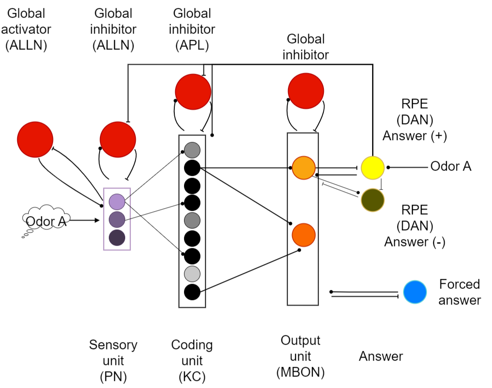
Turn an exposure into model input
- Inputs
- External metal-oxide exposures
- Method
- Train-only preprocessing, PCA and bin encoding
- Output
- Versioned PN input patterns
- Decision
- Separate data splitting from sampling trials
The KT Batch 1–3 corpus contains 8,366 cleaned exposures from a 14-channel metal-oxide array. Five devices were measured over 95 days between 6 March and 7 October 2020. Known faulty Batch 2 devices 1–2 were excluded, approximately 13% of the raw recordings. Four concentrations per gas and four humidity levels provide variation within the five classes.
| Class | Range |
|---|---|
| SO₂ | 10–100 ppm |
| NO₂ | 2–20 ppm |
| Toluene | 1–10 ppm |
| Ethanol | 5–40 ppm |
| NH₃ | 2–20 ppm |
Each KT exposure becomes a train-fitted input pattern. KT and UCI use different sensors, gases and preprocessing, so their scores remain separate.
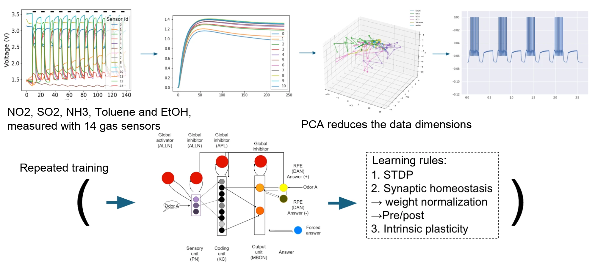
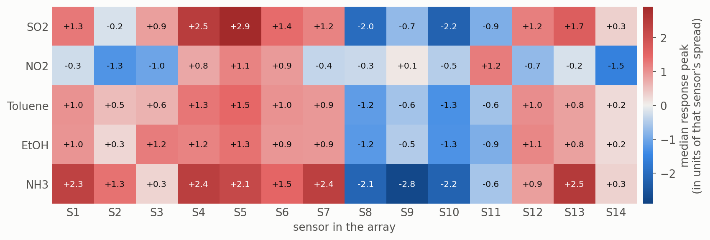
Dataset preparation, PCA and spike encoding
Each recording alternates clean-air “Dilute” and gas-exposure “Test” segments. The channel baseline is the median of the last 60 readings in the preceding Dilute segment. We extract signed delta-median, delta-steady (the median of the last 60 Test readings minus baseline), and delta-peak (the signed deviation with greatest absolute magnitude), together with baseline-relative variants. The reported network uses one delta-peak per sensor: 14 values per exposure.
Raw KT recording
A multi-channel metal-oxide time series for one experimental run on the KT Batch1–3 corpus. Recordings alternate clean-air and gas-exposure segments before any feature is computed.
Two datasets, two roles
The independent UCI-270 corpus provides a longer drift series: 13,910 measurements, 16 sensors, six gases, 128 features, ten batches and 36 months. It contains four sensors each of TGS2600, TGS2602, TGS2610 and TGS2620. The gases are ethanol, ethylene, ammonia, acetaldehyde, acetone and toluene. [14] [15] KT and UCI differ in class sets, feature dimensions and preprocessing; their scores are not interchangeable.
Train-only PCA
Missing entries are median-imputed using training data. PCA is fitted on the training partition and held fixed for validation. [16] KT uses unstandardized peak responses and eight components; the first three explain approximately 94% of variance and the first eight 99.5% in the reported projection. Large-amplitude channels therefore contribute more strongly. The 8 × 14 projection is computationally small, but variance retention does not guarantee class separation or preservation of all pairwise distances.
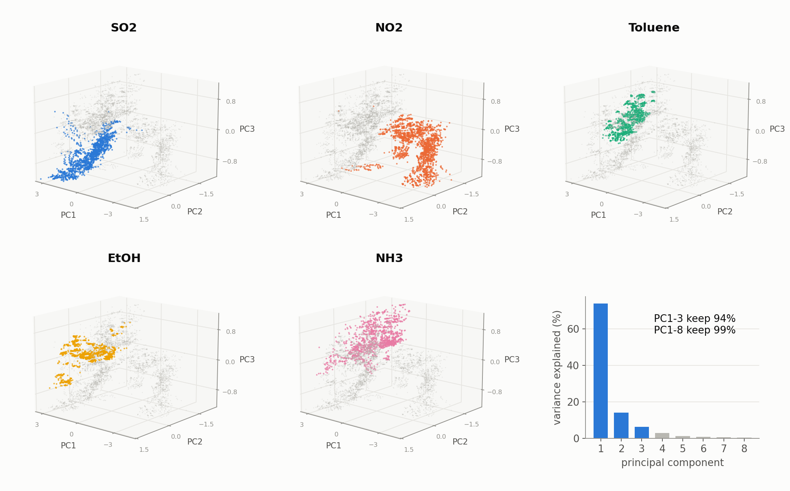
UCI features have very different scales. Training means and standard deviations standardize them before PCA; twenty components retain approximately 98% of variance and the first three retain 75%. Roughly 5% of extreme positions are omitted from the following plot to keep its central structure readable. This display choice does not establish a training exclusion.
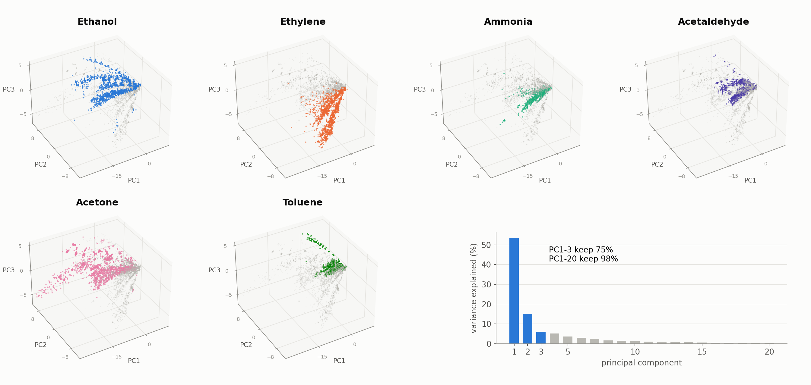
A bounded combinatorial PN code
Each PC axis is divided into twenty equal-width bins spanning its training range. A measurement activates one bin per axis; values beyond that range are clamped to an outer bin. For KT, eight components give 160 PN units, exactly eight receiving odor current. Similar exposures can share active bins, but quantization and clamping can also discard distinctions.
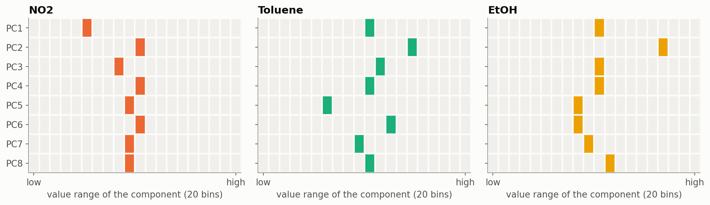
Network dynamics and the learned readout
The model expands PN inputs into sparse KC activity, then trains the KC-to-MBON readout with a correct-class teacher. Testing disables the teacher and learning; this is a computational abstraction of olfactory circuitry.
Network equations, learning rules and complete parameters
The network uses Brian2 conductance-based leaky integrate-and-fire neurons, AMPA-like excitation and GABA-like inhibition, and forward Euler integration at 0.1 ms. [17] Neuronal state is reset between exposures. The receptor names describe model currents; this is a computational abstraction rather than a neurotransmitter-complete fly circuit.
C · dV/dt = gL(EL − V) + gAMPA(EAMPA − V) + gGABA(EGABA − V) + Iinput
dgx/dt = −gx/τx; on a presynaptic spike, gx ← gx + w
A neuron spikes on crossing threshold, resets to −60 mV and remains refractory for 1 ms. The 160 PNs project randomly to 1,000 KCs with connection probability 0.05, about eight PN inputs per KC. Incoming weights total 800 nS per KC. One APL receives from every KC and inhibits every KC; each direction uses 30 nS connections. Five MBONs, one per KT gas, receive from all KCs and inhibit one another.
Activity regulates KC thresholds
The KC spike trace x rises by 0.1 per spike and decays with a 10 ms time constant. Active KCs raise their thresholds toward 0 mV; sufficiently quiet KCs relax toward −60 mV. This balances responsiveness and sparsity rather than fixing the active fraction in advance.
dVth/dt = ηx(Vmax − Vth) − κ(Vth − Vmin) · 1[x < 10−6]
η = 0.01 ms−1; κ = 10−4 ms−1; Vmin = −60 mV; Vmax = 0 mV
Local potentiation with competition for a fixed total
Only KC→MBON synaptic weights learn. Pre- and postsynaptic traces decay over 5 ms; spike pairs increase weight by up to 0.025 nS. Both temporal orders potentiate, unlike classical asymmetric STDP. [18] After every training presentation, each KC’s five outgoing weights are normalized to a total of 10 nS, with individual weights within 0–10 nS. Strengthening one output therefore reduces the relative strength of the others.
During training, the correct-class teacher starts 1 ms after odor onset and drives its MBON; mutual inhibition suppresses competitors. During testing, the teacher and all learning are disabled. The MBON with the most spikes is the predicted class. This rule is biologically motivated, not a literal dopamine-gated fly implementation.
Complete KT parameters and units
| Parameter | Value | Scope | Source / selection basis |
|---|---|---|---|
| Capacitance C | 300 pF | All neurons | Team Model record; simulation setting. No AeroSense measurement fit or row-specific literature derivation is archived. |
| Leak gL / reversal EL | 30 nS / −70 mV | Membrane time constant 10 ms | Team Model record; simulation setting. No AeroSense measurement fit or row-specific literature derivation is archived. |
| Threshold / reset | −40 mV / −60 mV | KC threshold subsequently adapts | Team Model record; simulation setting. No AeroSense measurement fit or row-specific literature derivation is archived. |
| Refractory period | 1 ms | All neurons | Team Model record; simulation setting. No AeroSense measurement fit or row-specific literature derivation is archived. |
| Excitatory reversal / decay | 0 mV / 2 ms | AMPA-like current | Team Model record; simulation setting. No AeroSense measurement fit or row-specific literature derivation is archived. |
| Inhibitory reversal / decay | −80 mV / 5 ms | GABA-like current | Team Model record; simulation setting. No AeroSense measurement fit or row-specific literature derivation is archived. |
| KC trace | +0.1 per spike; τ = 10 ms | Threshold adaptation | Team Model record; simulation setting. No AeroSense measurement fit or row-specific literature derivation is archived. |
| KC threshold bounds | −60 to 0 mV | Initially −40 mV | Team Model record; simulation setting. No AeroSense measurement fit or row-specific literature derivation is archived. |
| KC η / κ | 0.01 / 0.0001 ms⁻¹ | η = 0.005 × IP factor 2; recovery below trace 10⁻⁶ | Team Model record; simulation setting. No AeroSense measurement fit or row-specific literature derivation is archived. |
| Integration | Euler; Δt = 0.1 ms | State reset between exposures | Team Model record; simulation setting. No AeroSense measurement fit or row-specific literature derivation is archived. |
| Connection | Weight / total | Learning | Source / selection basis |
|---|---|---|---|
| PN→KC | p = 0.05; incoming sum 800 nS / KC | Fixed random projection | Team Model record; simulation setting. No AeroSense measurement fit or row-specific literature derivation is archived. |
| KC→APL | 30 nS per synapse | Fixed; all KCs | Team Model record; simulation setting. No AeroSense measurement fit or row-specific literature derivation is archived. |
| APL→KC | 30 nS per synapse | Fixed; all KCs | Team Model record; simulation setting. No AeroSense measurement fit or row-specific literature derivation is archived. |
| KC→MBON | Outgoing sum 10 nS / KC; individual 0–10 nS | Pair potentiation ≤0.025 nS; τ = 5 ms; normalize after exposure | Team Model record; simulation setting. No AeroSense measurement fit or row-specific literature derivation is archived. |
| Teacher→MBON | 1,500 nS | One-to-one; training only | Team Model record; simulation setting. No AeroSense measurement fit or row-specific literature derivation is archived. |
| MBON→teacher | 200 nS inhibitory | One-to-one feedback | Team Model record; simulation setting. No AeroSense measurement fit or row-specific literature derivation is archived. |
| Different MBONs | 2,000 nS inhibitory | Fixed mutual inhibition | Team Model record; simulation setting. No AeroSense measurement fit or row-specific literature derivation is archived. |
| Setting | KT value | Source / selection basis |
|---|---|---|
| Odor current | 2.05 nA in eight active PNs for 30 ms | Team Model record; simulation setting. No AeroSense measurement fit or row-specific literature derivation is archived. |
| Teacher current | 10 nA in the correct teacher, beginning 1 ms after odor onset | Team Model record; simulation setting. No AeroSense measurement fit or row-specific literature derivation is archived. |
| Exposure / gap | 30 ms / 3 ms | Team Model record; simulation setting. No AeroSense measurement fit or row-specific literature derivation is archived. |
| Training | 300 cycles × five gases = 1,500 sampled presentations | Team Model record; simulation setting. No AeroSense measurement fit or row-specific literature derivation is archived. |
| Testing | 50 sampled presentations / gas = 250; learning frozen | Team Model record; simulation setting. No AeroSense measurement fit or row-specific literature derivation is archived. |
Keep the three evaluation splits separate
KT evaluation uses five folds under two strategies. A gas-stratified random split mixes measurement days across training and testing. A whole-day split keeps each day intact, so test days are unseen. Imputation, scaling where applicable, PCA and bin edges are fitted to training data. Training comprises 300 cycles, each presenting every gas once; testing uses fifty presentations per gas with frozen learning.
The corpus unit is an exposure; a sampled presentation is a simulation trial. Repeated draws from an exposure do not create independent measurements. Macro-F1 is the unweighted mean of classwise F1 scores; accuracy is the fraction classified correctly. The metrics remain distinct throughout.
| Study | Dataset / split | Reported scale |
|---|---|---|
| Main SNN comparison | KT random / whole-day five-fold | Fold means; random macro-F1 0.87 ± 0.03 |
| Sensitivity | KT one random split; one run per setting | 250 sampled test presentations; baseline F1 0.868 |
| Layer diagnosis | KT one common random split | 6,692 train / 1,674 held-out exposures |
| Offline readout rules | UCI KC representations; five folds | Macro-F1; mean and fold spread |
| Reference calibration | UCI train Batch 1, test later batches | Accuracy averaged over Batches 2–10 |
| Continual learning | KT four gases, then NH₃ only | One run; fraction correct per class |
The fold plots label their uncertainty as “spread”; the source does not specify whether ±0.03 denotes standard deviation or another statistic. We therefore report fold variation, not a confidence interval. New-run seeds, fold assignments and machine-readable predictions are not included. Parameter sweeps selected settings, but a separate nested selection protocol is undocumented; these estimates do not establish performance on a completely untouched deployment population.
Classification varies across five gases
Under stratified random five-fold evaluation, KT mean macro-F1 is 0.87 with reported variation ±0.03; the source separately reports approximately 88% accuracy. This extends the earlier single-run 0.868 baseline without implying an identical seed or test partition.
The dominant error is toluene → ethanol
In the illustrated classwise result, NO₂ recall is 98%. Toluene recall is 60%, with 24% assigned to ethanol, consistent with their similar sensor profiles. The illustrated F1 scores are SO₂ 0.88, NO₂ 0.93, toluene 0.73, ethanol 0.83 and NH₃ 0.83; these are not the five-fold class means.
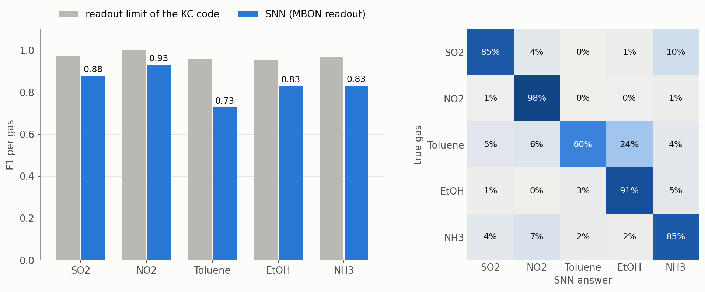
A sparse response precedes the decision
Eight PN units receive current per KT exposure. KC activity is initially stronger, then APL inhibition suppresses it after approximately 5 ms; the source reports about 11% active KCs on average. Four of the five illustrated trials are correct, while toluene is classified as ethanol. These examples explain dynamics rather than provide an independent accuracy estimate.
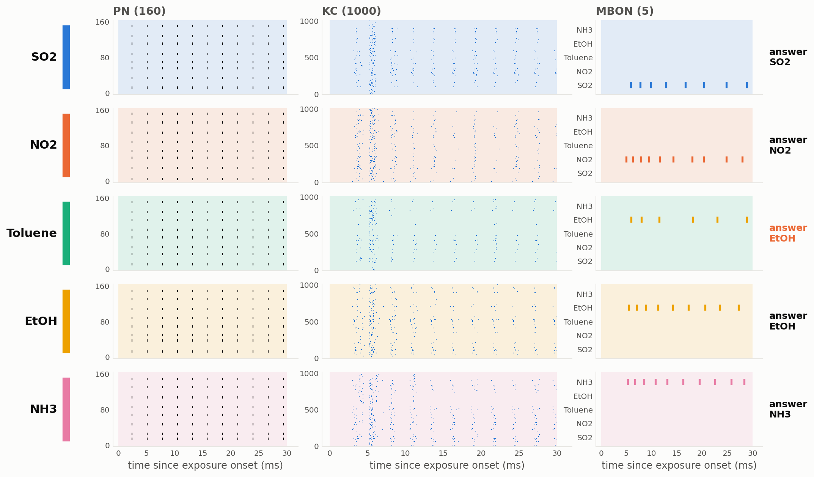
Unseen days expose a generalization gap
Unseen days reduce macro-F1 to 0.73
Gas identity is strongly associated with the 95 KT measurement days: almost every day contains only one gas, and no day has more than two. Random splitting can share day-specific conditions across training and test data. Keeping days intact is more stringent: SNN mean macro-F1 decreases from 0.87 to 0.73.
Compare classifiers under the same split question
| Classifier / input | Random macro-F1 | Whole-day macro-F1 |
|---|---|---|
| RBF SVM / eight PCs | 0.99 | 0.90 |
| Linear SVM / PN code | 0.96 | 0.84 |
| SNN / MBON output | 0.87 | 0.73 |
Figure 32: Compare the random and unseen-day splits on the same metric before attributing the loss to drift.
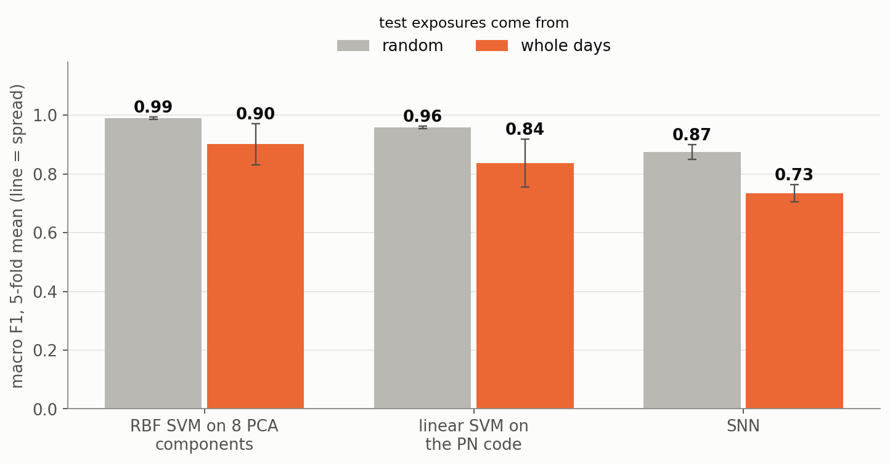
Design consequence. Future collection should interleave multiple gases within each day, randomize order, and retain device, humidity, concentration and time metadata. Whole-day holdout is informative but cannot isolate aging from all day-to-day changes.
Sensitivity identifies parameters worth controlling
This one-factor sensitivity study is exploratory. The related weight refinement was jagged and non-monotonic, and its best fixed-seed value remains gated. The companion state-precision experiment was invalidated by a clock-scheduling error; it is not a valid precision result. Read the invalidation and exact scope · Inspect the engineering record.
A one-at-a-time sweep varies parameters around the selected KT setting. Most changes of approximately 30–50% alter macro-F1 by less than 0.05. The KC→MBON weight limit and PN bin count have the largest effects; halving KC threshold adaptation decreases F1 by approximately 0.07. Each setting has one run and 250 sampled test presentations, so small differences need repetition before being called improvements.
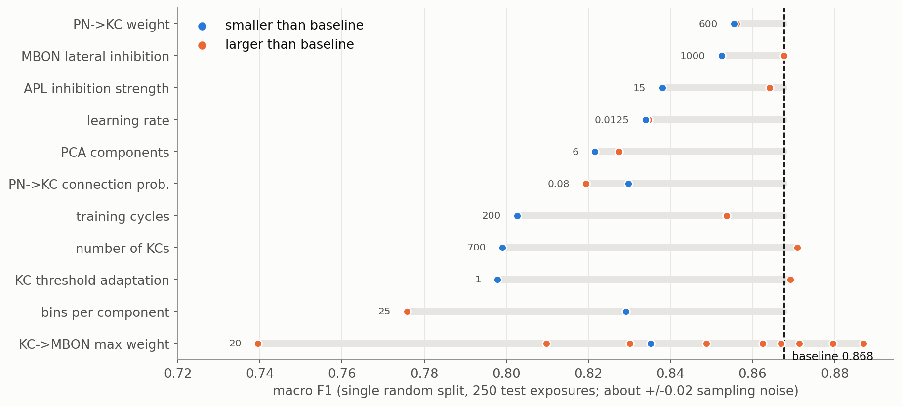
The readout is the main bottleneck
Conventional probes were trained on sensor, PCA, PN and KC representations using the same 6,692 training and 1,674 held-out KT exposures. RBF-SVM scores remain about 0.99 on raw sensor features and PCA, and 0.97 on PN and KC codes. The learned MBON output scores 0.84 in this diagnostic split: a 0.13 gap from the KC probe.
Figure 34: Layer probes distinguish representation quality from the learned MBON readout.
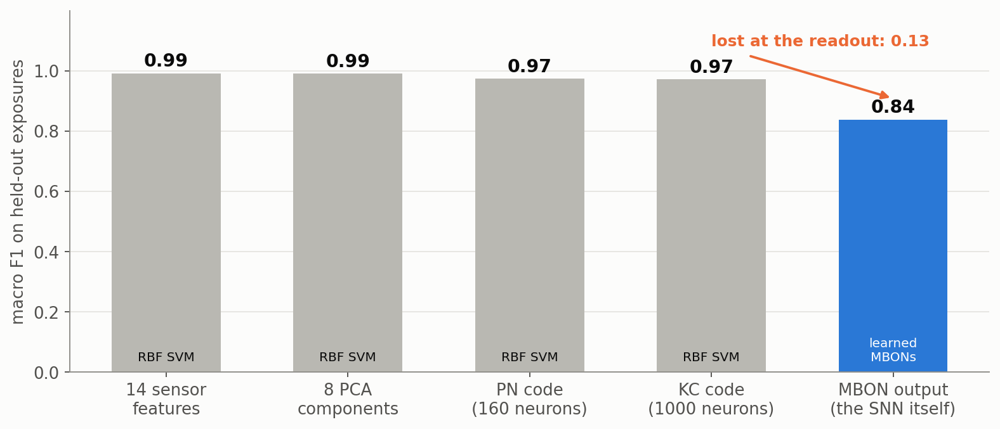
Linear-probe F1 improves only slightly from PN 0.96 to KC 0.97. Restricting a KC classifier to the 1,355 unique exposures actually encountered by sampled SNN training still gives about 0.95. These comparisons prioritize the learning/readout stage without proving that every upstream choice is optimal.
Error-driven updates are a promising next comparison
Offline UCI tests hold KC representations fixed. The current Hebbian rule with normalization reaches about 0.81 macro-F1; class averaging gives 0.80, adding depression after wrong answers gives 0.82, and error-driven variants reach 0.84–0.85. A linear-SVM probe reaches 0.89. Dopamine-dependent mushroom-body learning motivates error-sensitive updates, but biological reinforcement is more heterogeneous than a single correction signal. [19] [20] [21]
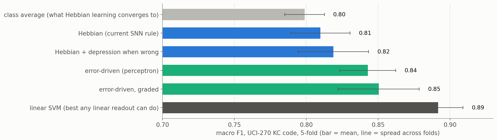
Drift changes response patterns
UCI concentration-corrected gain is compared with Batch 1 on a log₂ scale: +1 is a twofold gain and −1 a halving. For most gases, the median response gain across the sixteen sensors is about 1.2–2.3 times the initial value in Batches 2–9; by the 36-month batch, all six gas medians fall below their initial level. Four TGS2602 sensors differ from the other twelve: acetaldehyde, acetone and toluene responses become approximately 4–11 times weaker from Batch 2; one response is nearly silent around months 21–23. Drift depends on gas and is larger at low concentrations.
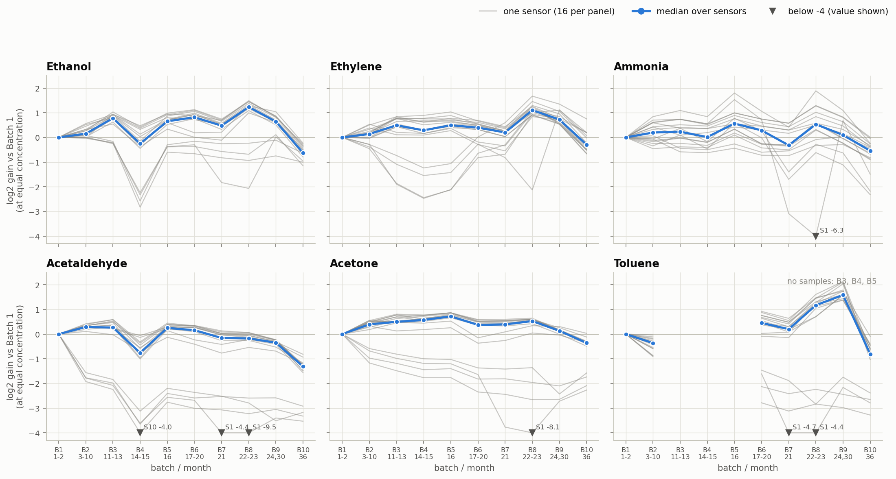
| Component | Share | Reference-gas interpretation |
|---|---|---|
| Global shift | 7% | Shared factor |
| Sensor-model shift | 55% | Model-specific factors needed |
| Individual sensor | 7% | Sensor-specific factors needed |
| Gas × sensor | 31% | One gas cannot identify all gas-specific changes |
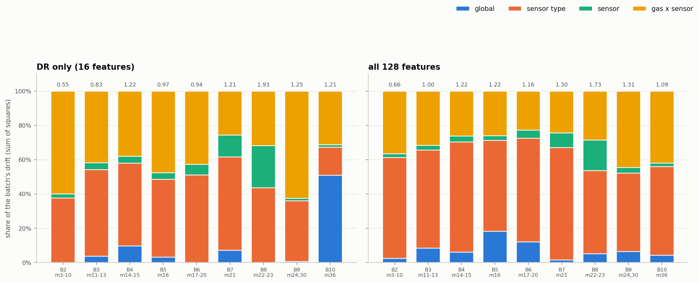
Aging and concentration coverage both matter
Within-batch SVM accuracy is about 99%. Training on Batch 1 and testing later batches gives about 33% mean accuracy; training on the preceding batch gives about 71%. More than 90% of Batch 10 samples fall outside Batch 9’s concentration range. Restricting comparisons to in-range concentrations changes several results, so the unrestricted loss cannot be attributed entirely to sensor aging.
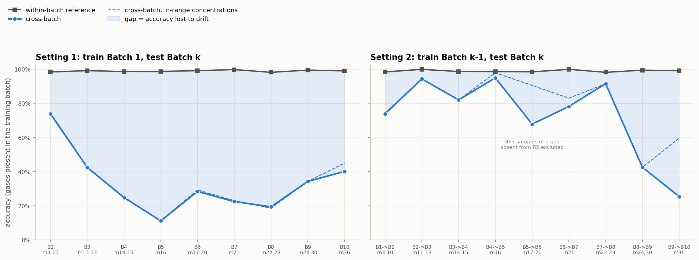
Ten ethanol measurements recover part of the loss
Ten ethanol references per new batch, with separate feature corrections, raise mean Batch 1→later-batch SVM accuracy from 33% to 58%. This recovers 25 of the approximately 66 percentage points separating the uncorrected score from the within-batch reference. A global correction gives 34%, and normalizing each sample gives 43%. Related domain-adaptation methods likewise use labeled target-domain samples. [22]
Figure 39: The UCI reference-gas comparison separates ten-ethanol-reference correction from the optimistic gas-specific comparator.
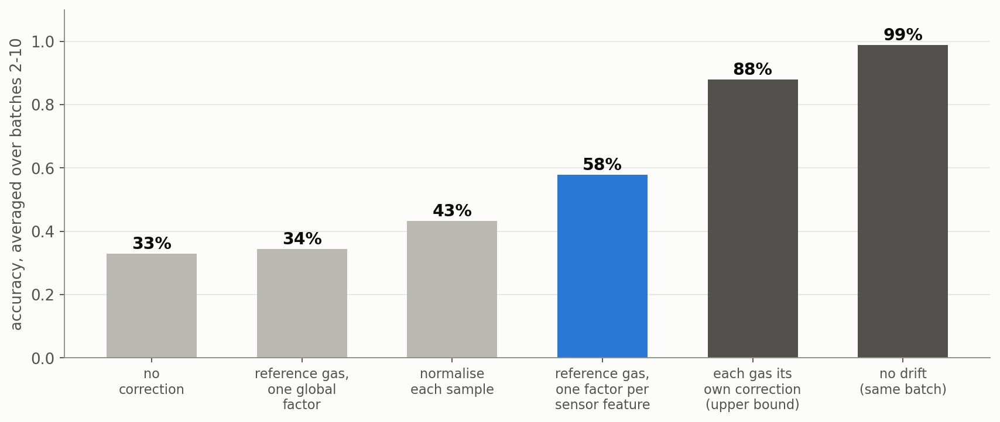
A reference-gas route is therefore worth evaluating in the reader. These results do not establish inherent SNN drift resistance. The decisive tests remain KT Batch 1→Batches 2–3 and UCI Batch 1→later / previous→next SNN evaluations, each with and without reference correction.
New-gas learning trades off retention
Sequential learning can interfere with earlier knowledge. [23] In an initial KT experiment, the network learns four gases and then receives ten cycles of NH₃ alone, without rehearsal of the old gases.
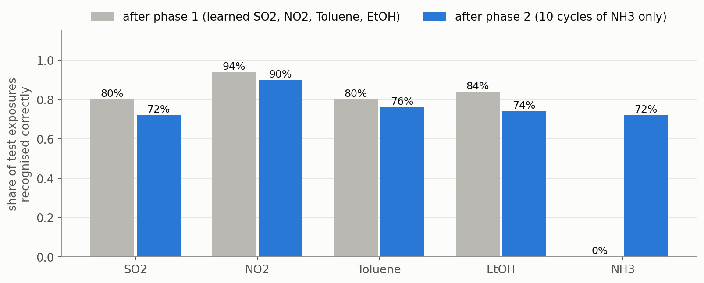
The four old classes lose 4–10 percentage points while retaining most of their initial performance. This is partial retention in one run, not a general solution to forgetting. Sparse KC overlap is a possible mechanism, but overlap was not quantified here. Multiple seeds, class orders and conventional sequential-learning baselines are needed.
The teacher schedule prevents the proposed error signal
A dopamine-inspired rule was implemented to weaken connections to a wrong MBON, but this weakening does not currently trigger: the correct teacher acts early and inhibition prevents competitors from answering first. The next design adds a free-response phase before a delayed teacher. No full-network classification or retention improvement has yet been reported for that design.
What this changes for AeroSense
Domain gap: map the unknown transfer instead of assuming it
The metal-oxide benchmark and the proposed cell assay do not share a measured feature-to-response mapping. We use the following conceptual transfer model to specify what must be identified from AeroSense experiments; no parameter has been fitted to a biological time series.
gas input → delivery kernel → receptor response → calcium / reporter dynamics → optical readout + background → features
| Dimension | Metal-oxide study | AeroSense quantity to identify |
|---|---|---|
| Kinetics | Archived peak-response features; dataset-specific sampling | Gas-to-cell delay, rise/decay, integration-window loss and sampling interval |
| Dynamic range | Resistance-derived feature scales and train-fitted bins | ΔF/F₀ distribution, reporter saturation and noise floor under fixed optical settings |
| Selectivity | Five KT / six UCI gas labels; sensor-array response patterns | Receptor × odor response matrix with dose, solvent, Orco and viability controls |
| Drift | Device/day/batch variation in resistance features | Cell-batch, expression, photobleaching, temperature and optical-registration variation |
| Calibration | Reference-gas correction on UCI SVM features | Whether a biological / optical reference predicts those changes without erasing true response |
First retain blank, reference and odor time courses from independent cultures and devices. Fit delivery and response parameters using training experiments only; evaluate on held-out batches and days. A transfer fit, numerical parameter values and predicted-versus-observed plot belong here only after those observations exist.
The practical lesson is to vary collection conditions independently before replacing the classifier. Record gas, device, concentration, humidity and day; interleave gases within days; evaluate feature-specific reference correction; and compare readout changes on fixed exposure partitions before increasing network size.
Transfer to AeroSense requires labeled odor-evoked HEK293 response traces, blanks and reference conditions, replicate cultures, and measurements across devices and time. Transfection fluorescence supports expression-related observations; it is not yet a gas-classification dataset. The physical models address obtaining a signal, while the decoder study addresses classification of an independent sensor-array signal.
The source describes an integer-arithmetic implementation. A reproducible engine package, numerical agreement report and measured latency, memory or power results are not supplied with these figures. The scores remain simulation benchmarks and do not establish an embedded-device specification.
-
01
Measure
Wet Lab / sensing layer produces a response (today: KT surrogate; target: AeroSense receptor fluorescence features).
Sense · Wet Lab -
02
Encode
Hardware measurement path (or archived sensor export) turns the measurement into a versioned feature vector.
Measurement · Dry Lab · Hardware -
03
Model
Fly-inspired SNN maps features → class scores (this page).
Odor decoding · Dry Lab · Model You are here -
04
Evaluate uncertainty / error
Splits, seeds, ablations, drift tests, per-class errors — only where archived.
Classification · Evaluation -
05
Change design
Update sensing panel, measurement quality, or model hyperparameters — only from validated evidence.
Act · Design change -
06
Measure again
Close the loop with a new assay / export (EXP-AS-07 path when available).
Sense · Wet Lab
Reproduction record and limits
The figures document reported simulations. Independent reproduction still requires the matching training code, split records, fitted preprocessing and predictions.
Complete reproduction record and release gaps
The figures and settings provide an inspectable analysis record. Independent reproduction also needs the input table, fold membership, sampling seeds, implementation and resolved configurations. The source describes versioned TOML presets and spike/prediction logs, but those decoder artifacts are absent from the supplied release; this is separate from the available physical-simulation archives.
Additional KT transfer observations
The team record also reports conventional-classifier scores of approximately 0.62–0.77 when training on KT Batch 1 and testing on Batches 2–3, and approximately 0.87 on Batch 3 after adaptation with a few labeled target-domain samples. The associated classifier identity, scoring metric, split details and target-sample budget are not specified. These remain provisional transfer observations; they cannot be treated as SNN macro-F1, directly compared with the UCI accuracy results, or used to establish an adaptation effect size.
Fold-safe workflow
exclude documented faulty devices
split exposures by gas-stratified folds OR whole measurement days
for each training fold:
fit medians; scale only where required
fit PCA; derive bins from training ranges
initialize fixed PN-KC projection and plastic readout
train 300 cycles x 5 gases; adapt thresholds and readout
freeze learning; disable teachers
score held-out presentations; retain unique exposure IDs
report fold metrics, confusion, seeds and split membershipRequired records for an independent rerun
| Record | Available | Required for a rerun |
|---|---|---|
| Dataset | Counts, cleaning and feature definitions | KT thesis citation, release authorization, exact features |
| Preprocessing | Train-only protocol | Fitted medians, scales, PCA and bins per fold |
| Network | Equations, units, weights and schedule | Executable code, versions and resolved presets |
| Evaluation | Seventeen figures and reported metrics | Fold IDs, new-run seeds, exposure IDs and predictions |
| Uncertainty | Fold means and reported spread | Spread definition, fold values and separate seed replication |
| Deployment | Source description of integer implementation | Engine, numerical agreement and device benchmarks |
What the evidence can support
Withdrawn state-precision result: the quantizer ran on the wrong clock
Our engineering review found quantize_states scheduled at self.dt = 1 ms, while Brian2 integrated at defaultclock.dt = 0.1 ms. Nine of every ten integration substeps therefore used unquantized float64 states. The affected state-precision / bit-sweep conclusions are invalidated and require a corrected rerun. They cannot specify an acceptable bit width or establish the dominant precision bottleneck.
The separate weight refinement reported w_kc_mbon = 13 and macro-F1 0.8870 at seed 100 against a 0.8676 historical baseline. Its jagged, non-monotonic response is a search lead, not a replacement model. The candidate must pass corrected-schedule checks, matched configurations and exposure partitions, and multi-seed / k-fold evaluation before promotion. The primary bug log, resolved configuration and corrected rerun are not archived; the later five-fold figures do not by themselves close this gate.
Engineering Cycle 2: discovery, withdrawal and validation gate →
Generalization is more than five folds
Five-fold evaluation extends a single-run result but does not quantify all variation from connectivity, initialization and presentation order. Vary those sources independently on fixed exposure partitions, define the fold-spread statistic, and document whether parameter selection reused evaluation data.
Separate motif tests from parameter sweeps
One-at-a-time sensitivity does not isolate the contribution of APL, KC expansion or intrinsic plasticity. Matched ablations should control training budget and test exposures. The strong PN linear probe makes a simpler direct readout an essential comparator.
Offline error-driven gains must be reproduced in the spiking network. A delayed-teacher test should measure both classification and retention across seeds and class orders. Chronological evaluation must separate concentration extrapolation, absent classes and drift. Finally, a metal-oxide benchmark cannot establish the noise, dynamics or stability of a cell-based reader; that requires AeroSense measurements.
Unseen days remain the harder test
The decoder reaches KT random-split macro-F1 0.87 ± 0.03 but falls to 0.73 on unseen days. Layerwise probes localize the largest measured loss to the learned readout, while UCI reference calibration recovers part of a conventional classifier’s cross-batch loss.
These results prioritize diverse collection schedules, split-resolved decoder artifacts and error-driven learning under chronological evaluation. They guide experiments; they are not yet an end-to-end biological odor-recognition demonstration.
Data and reproduction materials
No matching Brian2 PN–KC–MBON training engine, fold tables or seeds were found in the supplied release. Hardware simulation implementations are available separately. That package also contains a four-feature NumPy MLP implementation; it is not the decoder behind these figures.
Download the local Model manuscript · 10 October archive. The copy includes its source, publication date and HEK293 nomenclature correction. Read it with this page’s 11 October headspace and quantization-clock corrections; it preserves a historical record, not independent validation. The original Notion link below records provenance and is not required to obtain the local text.
All figures open at their supplied full resolution. The analysis source is the team’s Model (2) record. Independent reproduction requires the code, split tables and predictions identified below.
The UCI-270 dataset includes concentration and batch metadata. [15] KT is identified as a doctoral-thesis dataset, but its full citation and redistribution permission are not supplied; no raw KT download is offered. Decoder code, fitted preprocessing, fold tables, new-run seeds and machine-readable predictions are not included.
This study combines published receptor-response data with our computational analyses. It is separate from the metal-oxide sensor datasets in Odor decoding and from the HEK293 assays in Results. Its figures and data come from the 11 October receptor-engineering handover; no engineered-receptor improvement is claimed.
AeroSense · Computational receptor design
Receptor Engineering
From response data and cross-species tests to receptor design and molecular access.
Candidates found; sensitivity unproven
We identified receptor candidates, built a response-prediction model and established a molecular-analysis workflow. Improved sensitivity in an engineered receptor remains unproven.
1 · Priority receptors for functional testing
Published measurements support prioritizing Or22a and Or35a, two fly odorant receptors: their mean responses were higher for our selected mold-related odorants than for the control panel. These are evidence-based candidates, but mold specificity remains unproven. (Hallem & Carlson, 2006)
Read the evidence2 · A model of receptor–odorant response
We curated 2,640 responses across 24 receptors and 110 odorants, combining receptor sequences with molecular features. (Hallem & Carlson, 2006) In the latest matched 109-odorant comparison, the baseline achieved R² ≈ 0.39 for held-out chemical groups. It has predictive value with substantial remaining error; R² is not percentage accuracy.
Read the evidence3 · Vibrational and AI features connected to the predictor
We processed and tested 82 measured IR (infrared) spectra, published quantum vibration modes for 85 odorants, and OpenPOM features for 109 odorants. OpenPOM learns molecular representations from odor descriptions. (NIST, n.d.; Harada et al., 2025; Lee et al., 2023; Barsainyan et al., 2023) The workflow works, but these additions have not consistently outperformed the original model.
Read the evidence4 · Candidate access directions and local obstructions
In the mosquito reference complex, we established molecular dynamics (MD, simulation of atomic motion) in a membrane environment, extended simulations to 70 ns (nanoseconds) and identified two candidate access directions. Whole-molecule path scans located protein and lipid clashes. This identifies positions to investigate, but no route has been validated by complete molecular passage.
Read the evidence5 · Mutation designs and computational checks
We proposed 35 single-amino-acid substitutions and checked structures and docking poses for a subset of candidates. Docking tests how an odorant can fit into a receptor pocket. The design list is ready for further study, but no mutation yet has robust evidence of improved selectivity.
Read the evidence
The workflow, priority receptors and computational evidence guide the next experiments. Those experiments must test whether an engineered receptor is more sensitive and selective.
AeroSense needs receptors that help distinguish mold-associated volatile patterns. We combine response data and receptor sequences with molecular size, measured and computed vibrations, learned odor features, cross-species evaluation, structural models and molecular dynamics. The studies below connect each question to its method, result and next design decision.
Six engineering cycles + molecular-feature and species-transfer studies
How the evidence shaped each cycle
Select a step to see the evidence, learning and design change.
01–02 · Candidate design in Drosophila receptors
Receptor sequence + odorant chemistry (including weight) → functional response predictor
Same-pair holdouts + random controls + uncertainty → retain the baseline; test task adaptation next
The unresolved structural question motivates a separate reference-system study; it does not establish transfer between species.
03–06 · Molecular access in the OR10 (odorant receptor 10 from Aedes aegypti, the yellow-fever mosquito) (Zhao et al., 2024) reference complex
Design candidates · Drosophila receptors
Published odor-response measurements guide Or22a (one of the named Drosophila melanogaster odorant receptors in our design panel) (Hallem & Carlson, 2006) / Or35a mutation screening. AlphaFold (AI system that predicts protein 3D structures from sequence) (Jumper et al., 2021) models and ColabFold (protein-structure prediction workflow built around AlphaFold and fast sequence searches) (Mirdita et al., 2022) predictions support structural hypotheses.
Test transfer · Anopheles receptors
Compare fly-trained predictions with mosquito measurements, and test whether local sequence fragments identify receptors with similar response profiles. This is a separate test of generalization.
Investigate access · OR10 reference complex
Cryo-EM (cryo-electron microscopy: reconstructing molecular structures from electron images of frozen samples) structures 8V00 (PDB ID for the experimentally determined odorant-free OR10–Orco complex) (Zhao et al., 2024) and 8V02 (PDB ID for the experimentally determined o-cresol-bound OR10–Orco complex) provide an unbound and o-cresol (2-methylphenol, the odorant resolved in 8V02)-bound reference: mosquito OR10 (odorant receptor 10 from Aedes aegypti, the yellow-fever mosquito) with three Orco (odorant-receptor co-receptor, a shared partner that forms the channel with the odor-selective OR) subunits from Apocrypta bakeri. This separate model system does not validate Drosophila mutations. 8V00 · 8V02
Read the structure names
What are 8V00 and 8V02?
They are accession IDs in the Protein Data Bank (PDB), a public archive of molecular 3D structures. Each ID points to a deposited coordinate model and its experimental records. (Berman et al., 2000)
Both structures were determined by cryo-electron microscopy (cryo-EM), which reconstructs molecular structures from electron images of frozen samples. Both contain one odor-selective OR10 subunit from Aedes aegypti (the yellow-fever mosquito) and three Orco co-receptor subunits from the fig wasp Apocrypta bakeri. Orco is the shared partner that helps form the odorant-gated ion channel. This is an experimentally assembled complex combining proteins from two species. (Zhao et al., 2024)
| PDB entry | What was observed | Use in our study |
|---|---|---|
| 8V00 | Apo: no bound odorant. Experimental resolution: 2.88 Å (1 Å = 0.1 nm). | Odorant-free structural reference; a starting template for apo MD and static docking comparisons. |
| 8V02 | Odorant-bound (holo): o-cresol (2-methylphenol) is resolved in the OR10 pocket. Experimental resolution: 2.90 Å. | Reference for the bound ligand pose, bound-state MD, and candidate outward-path studies. |
MD means molecular dynamics: calculating atomic motion over time. Docking searches and scores candidate ligand positions and orientations. The PDB entries are experimental coordinate models, not simulation trajectories or AlphaFold predictions (AI predictions of protein structures from sequence). Before MD we rebuilt unresolved regions and added a membrane, water and ions; those additions are computational model assumptions. A bound experimental structure establishes an observed pose, not the route the odorant took to reach it. (Zhao et al., 2024; Jumper et al., 2021; Eastman et al., 2024; Trott & Olson, 2010)
Research evidence
Data foundation and evaluation design
The curated benchmark contains 2,640 published responses across 24 receptors and 110 odorants, with separate holdouts for different generalization questions.
The response data behind receptor selection

Full evidence and evaluation record
What was measured, and what did we compute?
The main benchmark contains 24 Drosophila receptors and 110 odorants: 2,640 receptor–odorant responses in spikes/s (neuronal action potentials recorded per second), with no missing response or duplicate pair ID in the curated table. A response threshold of 50 spikes/s was used for some classification comparisons; it is a project convention, not a universal activation threshold. (Hallem & Carlson, 2006)
All chemical names were mapped to PubChem (public chemical database used here to identify odorant structures) (Kim et al., 2025). Eleven original names leave stereochemistry unspecified. The full docking (computationally placing and scoring ligand poses in a receptor) (Trott & Olson, 2010) screen excluded multicomponent ammonium hydroxide and therefore contains 24 × 109 = 2,616 pairs; the main predictive benchmark retains all 2,640 responses. These are different analysis populations.
The sequence resource includes 60 OR-family genes, including Orco (odorant-receptor co-receptor, a shared partner that forms the channel with the odor-selective OR) (Zhao et al., 2024), and 65 protein isoforms (different protein versions produced by a gene). One representative per gene and 60 monomer models from AlphaFold DB (public database of precomputed AlphaFold structure predictions) support feature extraction. A predicted monomer is not the complete functional OR/Orco complex. (Jumper et al., 2021; Varadi et al., 2022)
Generalization is tested at more than one level
Five fixed split definitions were prepared. The main integrated-model comparisons emphasize random pairs, unseen chemical clusters and unseen receptors; defining a split does not mean every model was tested on it.
| Split | Question |
|---|---|
| Random-pair | Predict a held-out combination within known receptor and odorant sets. |
| Odorant-cold | Predict an odorant excluded from training. |
| Chemical-cluster-cold | Predict an excluded cluster of chemically similar odorants. |
| Receptor-cold | Predict a receptor excluded from training. |
| Receptor-cluster-cold | Predict an excluded sequence-related receptor group. |
DoOR checks data consistency
The DoOR (Database of Odorant Responses; integrates published fly odor-response profiles) comparison covers 107 shared odorants and 2,568 pairs. The sequence + ESM (protein language model used here to turn sequences into numerical features) (Lin et al., 2023) model has a median within-receptor Spearman (rank correlation, from −1 to +1; it measures ordering, not prediction accuracy as a percentage) correlation of 0.938. DoOR includes Hallem measurements, and overlapping Hallem pairs were used for training. This is a consistency check with shared sources, not independent external validation or 93.8% accuracy. (Münch & Galizia, 2016)
From response data to candidates
Published response differences prioritize Or22a and Or35a for functional testing, while receptor sequence features improve held-out-receptor prediction without establishing mold specificity or improved mutant function.
Choosing the first receptors

Full candidate selection and prediction comparisons
Which receptors and sequence changes are worth testing for a selected mold-related odor panel?
- Evidence · What happened
- Adding receptor sequence features improved prediction for held-out receptors. Or22a (one of the named Drosophila melanogaster odorant receptors in our design panel) (Hallem & Carlson, 2006) and Or35a showed useful target-versus-control response differences in the published data.
- Learning · What it means
- Sequence is informative, but additional structural features did not establish a reliable prediction gain beyond it.
- Change · What we do next
- Use predicted pockets (a local cavity in the receptor that can accommodate the ligand) to generate mutation hypotheses, then challenge their docking (computationally placing and scoring ligand poses in a receptor) (Trott & Olson, 2010) and contact explanations.
Explore Design → Build → Test → Learn → Redesign
Design question
Curate a benchmark of 24 Drosophila receptors and 110 odorants from published measurements. Compare a project-defined panel of mold-related volatiles with control odorants; these compounds are not assumed to be unique markers of mold. (Hallem & Carlson, 2006)
Build the model
Combine molecular descriptors, receptor sequences and AlphaFold (AI system that predicts protein 3D structures from sequence)-derived structural features in matched prediction models. Generate Or22a (one of the named Drosophila melanogaster odorant receptors in our design panel) (Hallem & Carlson, 2006) / Or35a point-mutation models with ColabFold (protein-structure prediction workflow built around AlphaFold and fast sequence searches) and dock target and control odorants. The build consists of computational sequences and structures. (Jumper et al., 2021; Mirdita et al., 2022)
Test & results
For receptors excluded from training, R² (coefficient of determination; 1 is perfect, 0 matches the mean baseline, and negative values are worse) increased from 0.1125 with ligand (a molecule that can bind to a receptor; here, the tested odorant) features to 0.2325 with sequence features. The full representation reached 0.2356; its additional gain had an uncertainty interval spanning zero. An initial docking (computationally placing and scoring ligand poses in a receptor) (Trott & Olson, 2010) screen suggested small relative preference shifts for F34Y (residue 34: phenylalanine → tyrosine) and E196Q (residue 196: glutamate → glutamine).
Learn
A useful predictor can help prioritize experiments, but a small docking-score difference does not demonstrate improved selectivity. R² describes predictive fit, not percent accuracy.
Redesign
Move from ranking candidates to checking whether the proposed mutations actually contact the odorant and whether their ranking survives changes in docking setup.
Prediction comparison

Download plotted values (CSV) ↓
Research evidence
Complete model comparisons
Matched feature ablation
The six feature sets use the same histogram gradient boosting (a tree-ensemble prediction model that successively corrects errors using binned features) settings, the same response pairs and fixed folds. L denotes ligand (a molecule that can bind to a receptor; here, the tested odorant) descriptors; S combines sequence descriptors and ESM2 (protein language model used here to turn sequences into numerical features) (Lin et al., 2023); P adds pocket (a local cavity in the receptor that can accommodate the ligand) features; D adds Vina (AutoDock Vina docking score; lower scores are more favorable in this model, not a measured response) (Trott & Olson, 2010; Eberhardt et al., 2021) and contact summaries; M adds multiple-pose features. PubChem (public chemical database used here to identify odorant structures) (Kim et al., 2025) identifiers, response-derived labels and split columns were excluded from the feature list; missing docking (computationally placing and scoring ligand poses in a receptor) descriptors follow the existing zero-fill convention.
Sequence information supplies the clearest gain in both evaluation settings. On unseen receptors, the full model adds only ΔR² (difference in R² between the compared models) = 0.0031 over LS, with a receptor-grouped 95% bootstrap (resampling observations or groups to assess statistical uncertainty) interval of −0.0316 to 0.0344. This does not establish an additional structural-feature gain; it does not show that all structure-based methods are ineffective.
| Features | Chemical-cluster-cold R² (coefficient of determination; 1 is perfect, 0 matches the mean baseline, and negative values are worse) | Receptor-cold R² |
|---|---|---|
| L | 0.1307 | 0.1125 |
| LS | 0.3855 | 0.2325 |
| LSP | 0.3840 | 0.2221 |
| LSD | 0.3781 | 0.2131 |
| LSPD | 0.3837 | 0.2154 |
| LSPDM | 0.3779 | 0.2356 |
Which information improves generalization?

How the earlier models informed redesign
These historical results use different representative models and feature versions. They are retained as method-development evidence and must not be combined into one model’s performance. For the matched historical HGB comparison, ΔR² ≈ 0.0175 had an interval of −0.0015 to 0.0419. Bootstrap intervals use fixed out-of-fold predictions; they omit retraining and model-selection uncertainty.
| Evaluation / model | R² | Spearman ρ (rank correlation, from −1 to +1; it measures ordering, not prediction accuracy as a percentage) |
|---|---|---|
| Random-pair / stacked tree | 0.569 | 0.739 |
| Chemical-cluster-cold / global blend | 0.420 | 0.659 |
| Receptor-cold / original HGB | 0.229 | 0.463 |
| Receptor-cold / HGB with multiple poses | 0.246 | 0.472 |
Docking features did not transfer uniformly
In an earlier ExtraTrees (an ensemble of decision trees with randomized splitting rules) analysis on 2,616 pairs, adding Vina/contact features raised chemical-cluster-cold R² from 0.066 to 0.220, while receptor-cold R² fell from 0.117 to 0.006. An eight-receptor pocket-redocking study and a small restrained implicit-solvent OpenMM (the software engine that integrates the atomic equations of motion) (Eastman et al., 2024) study also failed to establish a stable unseen-receptor improvement. These results motivated better pocket placement, pose checks and membrane-based conformational sampling.
Research evidence
Test richer odorant features
Measured spectra, harmonic modes and frozen learned features were tested against matched baselines; none established a consistent gain across models and holdouts.
Feature hypotheses, comparison cohorts and interpretation
Purpose · connect both sides of a receptor–odorant pair
A receptor sequence describes the protein, while molecular weight, spectra and learned chemical features describe the odorant. They can enter the same response predictor before docking (computationally placing and scoring ligand poses in a receptor) (Trott & Olson, 2010) or MD (molecular dynamics: computing atomic motion step by step from a force field) (Eastman et al., 2024). Our baseline already combines 540 sequence descriptors, 320 ESM2 (protein language model used here to turn sequences into numerical features) features, 12 physicochemical descriptors including molecular weight, and a 2,048-bit Morgan fingerprint: 2,920 inputs in total. A Morgan fingerprint encodes local molecular connectivity; it is not a 3D structure. (Hallem & Carlson, 2006; Lin et al., 2023)
We asked three successive questions: does measured IR (infrared absorption: how a molecule absorbs light at different vibrational frequencies) add information; do complete harmonic modes and EVA (a fixed-length descriptor formed by smoothing equally weighted normal-mode frequencies) (Turner & Willett, 2000) recover information outside that IR window; and can a pretrained odor-perception model supply a useful molecular representation? These are completed prediction experiments, separate from the OR10 (odorant receptor 10 from Aedes aegypti, the yellow-fever mosquito) (Zhao et al., 2024) entry/exit simulations.
Method · compare the same eligible pairs within each experiment
HGB (a tree-ensemble prediction model that successively corrects errors using binned features) and ExtraTrees (an ensemble of decision trees with randomized splitting rules) are two tree-based regression methods. We kept their settings fixed and used the existing five-fold chemical-group and receptor holdouts. Chemical-group holdout tests responses to excluded chemical groups; receptor holdout tests excluded receptors with known odors. Neither is a simultaneous unseen-receptor-and-odor test. Random features of matched dimensionality provide a control.
Each eligible subset gets its own retrained baseline. Scores from the 82-, 85-, 67- and 109-odorant subsets are not directly interchangeable. R² (coefficient of determination; 1 is perfect, 0 matches the mean baseline, and negative values are worse) measures prediction error relative to a constant-mean reference; it is not a correlation coefficient or a percentage accuracy. Spearman ρ (rank correlation, from −1 to +1; it measures ordering, not prediction accuracy as a percentage) measures ranking, and MAE measures absolute response error in spikes/s (neuronal action potentials recorded per second).
| Experiment | Odorants | Response pairs | Chemical groups |
|---|---|---|---|
| Measured IR / size ablation | 82 | 1,968 | 53 |
| Quantum modes | 85 | 2,040 | 56 |
| Measured–computed overlap | 67 | 1,608 | 45 |
| OpenPOM (Principal Odor Map; OpenPOM is its open-source reproduction for learned molecular odor features) (Lee et al., 2023; Barsainyan et al., 2023) | 109 | 2,616 | 69 |
Interpretation · exploratory comparisons with grouped uncertainty
Paired 95% intervals resample chemical groups or receptors using fixed out-of-fold predictions. They account for those grouped observations, but omit retraining, model-selection and assay (a defined experimental test of biological activity) uncertainty. A zero-crossing interval does not establish a reliable gain. These data and splits have been used in earlier work; this is exploratory evaluation, with no multiplicity adjustment for secondary comparisons.
Research evidence
Experiment A · molecular weight and measured IR
Adding measured IR spectra did not improve prediction for held-out chemical groups in either tested model, and small held-out-receptor gains remained uncertain.
Measured IR and size ablation

Measured spectra, matched comparisons and controls
Purpose · test added information, not a vibration mechanism
Prior work relates receptor responses to molecular volume and uses physicochemical properties to predict odor perception. Molecular weight and volume are related but distinct quantities. We therefore tested removing weight alone and removing a size-related group, alongside adding measured infrared absorption spectra. (Saberi & Seyed-allaei, 2016; Chacko et al., 2020)
Method · 82 matched gas-phase spectra
Of 110 odorants, 82 passed full chemical-identifier, gas-phase source and spectral-coverage checks in the NIST Chemistry WebBook (US National Institute of Standards and Technology; its Chemistry WebBook supplies spectral records). Missing spectra were excluded from all compared models, not zero-filled. We subtracted the first-percentile background, clipped negative absorbance, normalized total area over 650–3,800 cm⁻¹ and integrated 63 bands of 50 cm⁻¹. The 4 cm⁻¹ source sampling interval is not an instrument-resolution claim. (NIST, n.d.)
All six variants retain the same receptor sequence features. “Sequence + IR (infrared absorption: how a molecule absorbs light at different vibrational frequencies) only” replaces the entire chemical block with IR. The size group is molecular weight, heavy-atom count and molar refractivity (a property related to polarizability and size). These removals test incremental predictive value in this model, not a causal biological effect.
Measured odorant spectra

Results · measured IR did not improve new-chemical prediction
On unseen chemical groups, adding IR changed HGB (a tree-ensemble prediction model that successively corrects errors using binned features) R² (coefficient of determination; 1 is perfect, 0 matches the mean baseline, and negative values are worse) from 0.3930 to 0.3278 (Δ −0.0653; 95% interval −0.1127 to −0.0078) and ExtraTrees (an ensemble of decision trees with randomized splitting rules) from 0.3746 to 0.3458 (Δ −0.0288; −0.0564 to −0.0003). Receptor-holdout point gains were small: +0.0028 and +0.0102, with both intervals crossing zero.
Weight alone had model-dependent effects: retaining it changed chemical-holdout R² by −0.0121 in HGB but +0.0188 in ExtraTrees. Retaining the full size group improved point scores in both models (+0.0292 / +0.0751), although the HGB interval crossed zero. Weight was already available to the early response model; adding it is not an untested missing step.
The table reports R². The next experiment expands beyond the measured window using complete harmonic mode sets. A failed IR feature test does not disprove vibrational sensing.
| Inputs | Chemical · HGB | Chemical · ExtraTrees | Receptor · HGB | Receptor · ExtraTrees |
|---|---|---|---|---|
| Baseline | 0.3930 | 0.3746 | 0.2080 | 0.1000 |
| + IR 63 | 0.3278 | 0.3458 | 0.2108 | 0.1103 |
| Sequence + IR only | 0.2135 | 0.3209 | 0.1679 | 0.1103 |
| Remove weight | 0.4052 | 0.3557 | 0.1792 | 0.1096 |
| Remove size group | 0.3638 | 0.2995 | 0.2053 | 0.0949 |
| + Random 63 | 0.3194 | 0.3241 | 0.2132 | 0.1078 |
Research evidence
Experiment B · complete harmonic modes, EVA and computed IR
EVA and computed-IR features derived from published harmonic modes did not establish a stable prediction gain across the tested models and holdouts.
Quantum feature comparison

Full harmonic-mode methods, feature tests and matched cohorts
Purpose and acquisition · recover modes missed by the IR window
We reused published Gaussian quantum-chemistry outputs from Harada et al., a 2025 preprint, rather than claiming new quantum calculations. The method was gas-phase B3LYP/6-31G(d), a density-functional theory approximation and basis set. After checking calculation completion, mode counts, molecular connectivity and specified stereochemistry, 85 odorants were accepted: 4,767 harmonic modes, including 1,082 below 650 cm⁻¹. (Harada et al., 2025)
Each molecule provides one source conformer’s complete harmonic normal modes: coordinated atom-displacement patterns near an optimized geometry, with frequencies, IR (infrared absorption: how a molecule absorbs light at different vibrational frequencies) intensities, reduced masses and force constants. This does not cover all conformers, anharmonic motion, receptor-bound vibrations or full quantum dynamics. Twenty-two odorants lacked exact-match source files; two had imaginary frequencies; trans-caryophyllene required stereochemical review and was excluded.
Method · encode the same modes in two ways
EVA (a fixed-length descriptor formed by smoothing equally weighted normal-mode frequencies) gives every mode equal weight, smooths its frequency with a Gaussian of σ = 10 cm⁻¹, and samples 1–3,996 cm⁻¹ every 5 cm⁻¹ to form 800 features. Computed IR uses the same modes and grid but weights each mode by its calculated IR intensity. Neither applies area normalization or frequency scaling. This classical EVA formulation is not a reproduction of the 27-dimensional EVA used by Gabler et al. (Turner & Willett, 2000; Gabler et al., 2013)
Alongside full 800-feature inputs, we tested PCA (principal component analysis, which compresses features along directions of greatest variation) compression to 16 components and random 800/16-feature controls. PCA was fitted only on distinct training odors within each fold. Its variance retention is not evidence that response information was retained.
Equal-mode EVA versus intensity-weighted IR

Results · full and compressed features, 85 odorants
The prespecified primary comparison was HGB (a tree-ensemble prediction model that successively corrects errors using binned features) with added EVA under chemical-group holdout: R² (coefficient of determination; 1 is perfect, 0 matches the mean baseline, and negative values are worse) 0.3810 → 0.3421, Δ −0.0389 (95% interval −0.0800 to +0.0022). The point estimate fell, but this interval crosses zero; it supports neither a reliable gain nor a confirmed decline. ExtraTrees (an ensemble of decision trees with randomized splitting rules) also fell, from 0.4225 to 0.3772. Compressed features came closer to the baseline without exceeding its chemical-holdout point score.
For unseen receptors, HGB rose slightly with full EVA or computed IR, but both intervals crossed zero and random features showed similar point gains. Thus no stable improvement across models and holdouts was established. All table values are R².
| Inputs | Chemical · HGB | Chemical · ExtraTrees | Receptor · HGB | Receptor · ExtraTrees |
|---|---|---|---|---|
| Baseline | 0.3810 | 0.4225 | 0.2217 | 0.1435 |
| ＋EVA 800 | 0.3421 | 0.3772 | 0.2315 | 0.1175 |
| + Computed IR 800 | 0.3177 | 0.3755 | 0.2372 | 0.1014 |
| ＋EVA PCA 16 | 0.3683 | 0.4186 | 0.2186 | 0.1320 |
| + Computed IR PCA 16 | 0.3635 | 0.4164 | 0.2298 | 0.1272 |
| + Random 800 | 0.2265 | 0.2812 | 0.2338 | 0.1037 |
| + Random 16 | 0.3241 | 0.3987 | 0.2323 | 0.1287 |
Matched comparison · 67 odorants with both data sources
The measured-IR and quantum datasets overlap for 67 odorants. We retrained all baselines on these same 1,608 pairs. None of the spectral additions exceeded the chemical-holdout baseline in either model. Measured IR uses a different range, dimension and normalization, so this is not an isolated test of experimental versus quantum spectral accuracy.
| Inputs | Chemical · HGB | Chemical · ExtraTrees | Receptor · HGB | Receptor · ExtraTrees |
|---|---|---|---|---|
| Baseline | 0.3744 | 0.4003 | 0.2075 | 0.1094 |
| ＋EVA 800 | 0.2847 | 0.3488 | 0.2076 | 0.0910 |
| + Computed IR 800 | 0.2391 | 0.3643 | 0.2047 | 0.0968 |
| + Measured IR 63 | 0.3360 | 0.3809 | 0.2127 | 0.1121 |
Measured and computed spectra on the same odors

What this says about vibrational theories
Vibrational explanations of smell remain disputed: isotope-related fly behavior has supported further investigation, while receptor experiments and an OR51E2/propionate computational study provide counterevidence in their tested systems. Predictive usefulness of a spectrum would not by itself demonstrate electron tunneling, and our negative feature results do not exclude every vibrational mechanism. Classical MD (molecular dynamics: computing atomic motion step by step from a force field) (Eastman et al., 2024) here does not simulate electron tunneling. (Franco et al., 2011; Block et al., 2015; Williams et al., 2026)
Research evidence
Experiment C · transfer frozen OpenPOM molecular features
Frozen OpenPOM features changed prediction performance in a model-dependent direction, with no stable POM-specific gain established over the matched baseline.
Does an odor-perception AI improve receptor predictions?

Full OpenPOM methods, model comparisons and uncertainty
Purpose · from human odor perception to insect receptor responses
The Principal Odor Map learns molecular representations from human odor descriptions. OpenPOM (Principal Odor Map; OpenPOM is its open-source reproduction for learned molecular odor features) is an open-source reproduction, not the original POM model weights. We tested whether its learned chemical representation helps a sequence–odorant response predictor; a “floral” or “mushroom” label cannot replace a measured insect-receptor response. (Lee et al., 2023; Barsainyan et al., 2023)
Method · fixed 256-dimensional features, retained molecular weight
We extracted the official 256-dimensional penultimate linear representation from a prespecified public checkpoint in inference mode, without response-label fine-tuning. A second fixed checkpoint was tested separately as a sensitivity comparison. The variants either add POM to the baseline (3,176 total features) or replace only the Morgan fingerprint (1,128 total); all retain physicochemical descriptors including weight and both sequence blocks.
All variants use 109 odorants × 24 receptors. Ammonium hydroxide was excluded because its two isolated ions have no covalent bonds for this graph-model workflow; it was not replaced with ammonia. The upstream model does not encode stereochemistry: 109 odorants map to 106 distinct graphs, including three indistinguishable stereoisomer pairs. Identical graphs receive identical features.
A provenance audit found 108 of 109 non-stereochemical structures in the public 4,983-molecule candidate pretraining pool. Exact checkpoint training/test membership is unavailable. Chemical-group holdout therefore means unseen downstream Hallem responses, not a guarantee that the entire AI system has never encountered those molecular structures or human odor labels.
Results · the direction depends on the response model
The prespecified primary comparison, HGB (a tree-ensemble prediction model that successively corrects errors using binned features) plus POM on unseen response chemical groups, changed R² (coefficient of determination; 1 is perfect, 0 matches the mean baseline, and negative values are worse) from 0.3892 to 0.3232: Δ −0.0661 (95% interval −0.1327 to +0.0189). ExtraTrees (an ensemble of decision trees with randomized splitting rules) instead rose from 0.3572 to 0.3967: Δ +0.0395 (−0.0490 to +0.1334). Replacing the fingerprint and using the second checkpoint showed the same model-dependent direction; every POM R²-difference interval crossed zero.
ExtraTrees’ chemical-holdout R² gain did not improve ranking or absolute error: Spearman ρ (rank correlation, from −1 to +1; it measures ordering, not prediction accuracy as a percentage) changed 0.6465 → 0.6459 and MAE 25.2021 → 25.6071 spikes/s (neuronal action potentials recorded per second). On unseen receptors, adding POM gave small R² increases (HGB 0.2108 → 0.2332; ExtraTrees 0.1210 → 0.1321), but random features achieved 0.2312 / 0.1323. These results do not establish a POM-specific, stable gain. Table values are R².
| Inputs | Chemical · HGB | Chemical · ExtraTrees | Receptor · HGB | Receptor · ExtraTrees |
|---|---|---|---|---|
| Baseline | 0.3892 | 0.3572 | 0.2108 | 0.1210 |
| POM replaces fingerprint | 0.3251 | 0.4004 | 0.2267 | 0.1320 |
| + POM | 0.3232 | 0.3967 | 0.2332 | 0.1321 |
| + Random 256 | 0.2821 | 0.2727 | 0.2312 | 0.1323 |
| Replace: second weights | 0.3515 | 0.4075 | 0.2057 | 0.1256 |
| Add: second weights | 0.3565 | 0.4103 | 0.2185 | 0.1351 |
Predicted versus measured response

Learning and redesign · retain the baseline; validate adaptation next
The project now has verified measured spectra, harmonic-mode descriptors and reproducible frozen AI features. None has yet established a stable general improvement over the matched baseline. POM with ExtraTrees remains a candidate for independent validation, not a validated replacement. These feature tests do not validate mutation effects, cross-species transfer, affinity, EC50 (concentration producing half the maximal response in a specified functional assay) or detection limits.
LORAX studies low-rank task adaptation of chemical foundation models and motivates the next comparison, but we have not run it. Because its published work also uses Hallem data, future adaptation and model selection must occur within our training folds, followed by independent validation; weights exposed to held-out responses cannot provide an uncontaminated test. Additional 3D size descriptors and unresolved quantum structures are also future work. (McConachie et al., 2026)
Do the improvements survive uncertainty?

Does better docking support selectivity?
The proposed mutations did not retain a robust positive panel preference across docking checks, so their selectivity benefits remain hypotheses for functional testing.
Do the proposed mutations improve panel preference?

Full mutation design, docking checks and structural interpretation
Do the leading mutation hypotheses have a stable score advantage and a plausible structural explanation?
- Evidence · What happened
- F34Y (residue 34: phenylalanine → tyrosine) and E196Q (residue 196: glutamate → glutamine) lacked direct mutated-side-chain contacts in the inspected poses. Their relative preference changed with docking (computationally placing and scoring ligand poses in a receptor) (Trott & Olson, 2010) setup; no robust positive winner emerged.
- Learning · What it means
- A favorable score can reflect pose placement or search choices without supporting the proposed mutation mechanism.
- Change · What we do next
- Improve pocket (a local cavity in the receptor that can accommodate the ligand) and conformation assessment before expanding mutation claims; study access in an experimentally resolved reference complex.
Explore Design → Build → Test → Learn → Redesign
Design question
Require both an interpretable ligand (a molecule that can bind to a receptor; here, the tested odorant)–residue relationship and a preference that is stable across reasonable docking (computationally placing and scoring ligand poses in a receptor) (Trott & Olson, 2010) choices.
Build the model
Align mutant and wild-type structures, compare a common search region with an alternative template-informed center, and inspect side-chain contacts. Define preference as the docking change for controls minus the change for mold-related odorants.
Test & results
Using a 4.5 Å (ångström; 1 Å = 0.1 nm) contact criterion, neither F34Y (residue 34: phenylalanine → tyrosine) nor E196Q (residue 196: glutamate → glutamine) supported a direct-contact explanation in the inspected poses. Candidate preference directions were sensitive to docking setup and odor-panel composition. No mutation maintained a robust positive preference across these checks.
Learn
The first screen generated hypotheses, not validated engineered receptors. Lack of direct contact does not rule out indirect effects, but those effects were not demonstrated by these models.
Redesign
Separate the functional-prediction question from the physical-access question. Use the OR10 (odorant receptor 10 from Aedes aegypti, the yellow-fever mosquito) (Zhao et al., 2024)/Orco (odorant-receptor co-receptor, a shared partner that forms the channel with the odor-selective OR) complex to test what docking alone leaves unresolved.
Checking the proposed mutation mechanism

Research evidence
Mutation design and the odor panel
Priority receptors and improved mutants are separate decisions
Our comparison of published responses found higher mean responses to the selected mold-related panel than to the control panel for unmodified Or22a (one of the named Drosophila melanogaster odorant receptors in our design panel) and Or35a. This supports prioritizing these receptors for functional testing; their selection does not depend on a proposed mutation succeeding. The selected-panel comparison does not establish mold specificity or a detection limit. (Hallem & Carlson, 2006)
Mutation screening asks a further question: does changing an amino acid improve preference relative to the original receptor? F34Y (residue 34: phenylalanine → tyrosine) and E196Q (residue 196: glutamate → glutamine) showed small favorable shifts in the initial screen, but subsequent checks found that the direction and ranking depended on the calculation setup. Thus receptor candidates have been identified, while the proposed mutation benefits remain uncertain even before wet-lab validation.
Computational constructs
We proposed 35 single-residue substitutions across Or35a, Or22a, Or85b, Or98a and Or67a and checked the original amino acid at every position. The first structural screen used 12 substitutions plus Or22a/Or35a wild types, giving 14 ColabFold (protein-structure prediction workflow built around AlphaFold and fast sequence searches) (Mirdita et al., 2022) models. These are sequence and structure designs; they do not represent completed cloning or functional expression.
Mean pLDDT (predicted local structure confidence on a 0–100 scale; higher is more confident) (Jumper et al., 2021) was about 91.6–92.2 for Or22a and 84.0–86.0 for Or35a. Local Cα (alpha-carbon atoms, used to trace the protein backbone) RMSD (root-mean-square deviation: positional difference after the stated structural alignment) within five residues on each side of the substitution was about 0.06–0.25 Å (ångström; 1 Å = 0.1 nm). Similar predicted backbones do not establish protein stability or receptor function.
| Receptor | Substitutions in the first structural screen |
|---|---|
| Or22a | E196Q, E196A (residue 196: glutamate → alanine), E196K (residue 196: glutamate → lysine), S33A (residue 33: serine → alanine), S33T (residue 33: serine → threonine), F34A (residue 34: phenylalanine → alanine), F34Y |
| Or35a | I87A (residue 87: isoleucine → alanine), I87V (residue 87: isoleucine → valine), I87F (residue 87: isoleucine → phenylalanine), W305F (residue 305: tryptophan → phenylalanine), W305Y (residue 305: tryptophan → tyrosine) |
What “mold-related preference” means here
The 14 structures were docked against 16 odorants. ΔVina (mutant docking score minus the corresponding wild-type score) = score(mutant) − score(WT (wild type: the unmutated reference sequence)); panel-preference shift = mean(ΔVina_control) − mean(ΔVina_mold-related). A positive shift favors this selected panel in the score comparison. It is not a receptor activation, EC50 (concentration producing half the maximal response in a specified functional assay) or detection-limit estimate.
| Group | Odorants |
|---|---|
| Mold-related | 1-octen-3-ol; 2-heptanone; 1-octanol; 1-butanol; 3-methylbutanol; 4-ethyl guaiacol; methyl octanoate; ethyl octanoate |
| Controls | acetophenone; benzaldehyde; ethyl acetate; ethyl butyrate; geranyl acetate; linalool; linalool oxide; methyl acetate |
Why the first ranking was revised
Initial shifts were +0.0581 for F34Y and +0.0543 for E196Q. Later common-box means were −0.0234 and +0.0142, with search ranges crossing zero. Both mutations lacked direct side-chain contacts in the inspected original and recalculated poses. For 1-octen-3-ol, the historical closest side-chain distances were about 10.6 and 10.4 Å.
The audit aligned mutant and WT Cα atoms, inspected all saved docking (computationally placing and scoring ligand poses in a receptor) (Trott & Olson, 2010) modes, and compared a common 26 Å cubic search box with a template-informed alternative center. The 8V02 (PDB ID for the experimentally determined o-cresol-bound OR10–Orco complex) (Zhao et al., 2024) footprint was transferred using US-align (software that aligns 3D molecular structures) (Zhang et al., 2022) only as a heterologous spatial hypothesis: some original poses lay about 24 Å from that center. It is not an experimentally mapped Drosophila pocket (a local cavity in the receptor that can accommodate the ligand).
Leave-one-odorant-out and within-panel resampling also left F34Y/E196Q uncertainty spanning zero. Input preparation retained aromatic-bond perception warnings, and historical and revised docking settings were analyzed separately. F34Y loses priority as a selectivity candidate; E196Q remains a low-confidence comparison; I87V is useful as a contact-positive case with a negative relative preference. No first-round mutation is a validated positive winner.
Research evidence
Can receptor function transfer across species?
The fly-trained baseline did not transfer reliably to mosquito responses, while local sequence matching produced only a weak exploratory signal requiring independent validation.
Fly-trained predictions versus mosquito measurements

Full cross-species prediction and sequence-fragment tests
Design · distinguish response prediction from analogue matching
We tested whether fly-derived information can help prioritize mosquito receptors. Carey et al. provide 50 Anopheles gambiae receptors × 113 odorants, or 5,650 responses with SEM (standard error of the mean, describing uncertainty in an estimated mean); 40 odorants overlap the fly panel. This Anopheles transfer study is separate from the Aedes OR10 (odorant receptor 10 from Aedes aegypti, the yellow-fever mosquito) molecular-dynamics reference system. (Carey et al., 2010)
All 50 historical receptor names have candidate sequences: 46 grade A, two grade B and two grade C. Naming or duplicate-gene ambiguity affects AgOr12 (an Anopheles gambiae odorant receptor; Ag identifies the mosquito species) (Carey et al., 2010) and AgOr67. The main fragment analysis therefore uses 48 receptors with A/B evidence against 24 fly receptors, giving 1,152 receptor–receptor pairs. The initial direct-transfer baseline used all 50 mosquito receptors.
Test 1 · transfer the fly-trained response model
On the 2,000 mosquito receptor–odorant pairs sharing chemical identities with the fly benchmark, the ExtraTrees (an ensemble of decision trees with randomized splitting rules) transfer baseline produced R² (coefficient of determination; 1 is perfect, 0 matches the mean baseline, and negative values are worse) = −0.288 and Spearman ρ (rank correlation, from −1 to +1; it measures ordering, not prediction accuracy as a percentage) = −0.060. Negative R² means its squared prediction error exceeded the constant-mean reference on this evaluation set. This baseline does not support reliable species transfer.
Test 2 · match local sequence fragments
The alternative question is whether two receptors respond similarly across the shared 40-odorant panel. We compared full-length identity (fraction of aligned amino-acid positions that are identical) and ESM (protein language model used here to turn sequences into numerical features) (Lin et al., 2023) embeddings (a numerical vector representing a sequence or molecule) with local 21-, 31- and 41-amino-acid windows. Variants down-weight shared sequence framework and species signatures, subtract within-species embedding backgrounds, or require compatible relative position and hydropathy. These are sequence-based topology proxies, not a 3D pocket (a local cavity in the receptor that can accommodate the ligand) mapping.
Reciprocal matching asks whether each fragment selects its partner as the best match in both directions. Activity labels were not used to learn fragment weights. However, methods were compared and selected on the same response matrix, so the selected result still requires receptor-held-out confirmation.
Full-length identity gave ρ = 0.017. The 31-aa (amino-acid residues) mutual-best fraction reached ρ = 0.141 with a receptor-bootstrap (resampling observations or groups to assess statistical uncertainty) interval of 0.035–0.250. The unadjusted block-permutation p was 0.033, but BH (Benjamini–Hochberg multiple-testing correction; q is the adjusted p-value reported here) (Benjamini & Hochberg, 1995) correction across the tested methods gave q = 0.259. The weak exploratory signal did not meet the corrected 0.05 threshold; these correlations concern profile similarity, not individual ligand (a molecule that can bind to a receptor; here, the tested odorant) activation.
Sequence methods for finding functional analogues

Learn and redesign · validate when a local match is useful
The effect is receptor-dependent: examples in the broader sensitivity analysis improve for AgOr4/AgOr56 and deteriorate for AgOr63/AgOr41. Removing a species mean alone did not solve transfer. Next steps are genuine 3D pocket neighborhoods, receptor-held-out nested selection and matched external assays (a defined experimental test of biological activity). Spodoptera littoralis sequences and literature have been inventoried, but a usable numerical response matrix and further sequence checks are still needed; third-species validation is not complete.
For the third-species inventory, the functional literature is de Fouchier et al.’s moth-receptor study, and candidate amino-acid sequences were recovered from the supplementary material of Jacquin-Joly et al. These sources support the inventory, not a completed transfer-validation result. (de Fouchier et al., 2017; Jacquin-Joly et al., 2012)
Does receptor motion improve odor ranking?
In the 29-odorant literature panel, docking to MD-derived receptor ensembles did not improve response ranking over the static unbound reference.
Odor-response ranking

Research evidence
Build and check the membrane models
Correcting the membrane-system geometry resolved the observed short-range periodic-image issue, while rebuilt Orco regions remained uncertain structural hypotheses.
Uncertainty in rebuilt Orco regions

Membrane construction, rebuilt regions and geometry checks
Experimental coordinates, AlphaFold and missing regions
8V02 (PDB ID for the experimentally determined o-cresol-bound OR10–Orco complex) is the o-cresol (2-methylphenol, the odorant resolved in 8V02)-bound Aedes aegypti OR10 (odorant receptor 10 from Aedes aegypti, the yellow-fever mosquito) complex with three Apocrypta bakeri Orco (odorant-receptor co-receptor, a shared partner that forms the channel with the odor-selective OR) subunits; 8V00 (PDB ID for the experimentally determined odorant-free OR10–Orco complex) is its unbound structural reference. AlphaFold (AI system that predicts protein 3D structures from sequence) supports the missing-region hypotheses and fly-receptor features, while ColabFold (protein-structure prediction workflow built around AlphaFold and fast sequence searches) supplies the mutation models. The resolved OR10/Orco coordinates used for MD (molecular dynamics: computing atomic motion step by step from a force field) (Eastman et al., 2024) originate from cryo-EM (cryo-electron microscopy: reconstructing molecular structures from electron images of frozen samples), not a de novo AlphaFold complex prediction. (Zhao et al., 2024; Jumper et al., 2021; Mirdita et al., 2022)
| Reference | Unresolved Orco segments per subunit | Rebuilt residues across the complex |
|---|---|---|
| 8V02 | 1–6, 160–167, 244–312 | 249 |
| 8V00 | 1–3, 160–167, 244–312 | 240 |
A complete sequence is not a validated loop conformation
The complete complex has 1,797 protein residues. The Orco 244–312 loop has mean pLDDT (predicted local structure confidence on a 0–100 scale; higher is more confident) (Jumper et al., 2021) 37.68 and mean loop-to-core PAE (predicted aligned error, an estimate of uncertainty in relative residue placement; lower is more confident) 28.88 Å (ångström; 1 Å = 0.1 nm) in the AlphaFold reference. Core alignment and local rebuilding produce testable hypotheses, not observed loop positions. Geometrically rejected candidate structures were excluded from MD, and accepted apo (the odorant-free state) hypotheses retain common modeling ancestry.
Physical model and engineering corrections
OpenMM (the software engine that integrates the atomic equations of motion) integrates classical atomic motion in a POPC (a phosphatidylcholine lipid used to build the model membrane) membrane with TIP3P (a three-site water model used in molecular simulations) (Jorgensen et al., 1983) water and ions, using ff14SB (the Amber parameter set for protein atomic interactions) (Maier et al., 2015)/Lipid17 (the Amber parameter set for lipid atomic interactions) (OpenMM contributors, n.d.) and GAFF 2.2.20 (General Amber Force Field; here version 2.2.20 supplies small-molecule parameters) (Wang et al., 2004) with AM1-BCC (a method for assigning approximate partial charges to ligand atoms) (Jakalian et al., 2002) ligand (a molecule that can bind to a receptor; here, the tested odorant) charges. Preparation uses pH 7 protonation, not constant-pH dynamics. The baseline is 300 K and 1 bar with PME (particle-mesh Ewald, a method for long-range electrostatics in periodic boxes) and a 1 nm (nanometers; 1 nm = 10⁻⁹ meters) short-range cutoff; bonds to hydrogen are constrained, with no hydrogen-mass repartitioning. Steering studies use the documented 300 K NVT (constant particle number, volume and temperature) setup. (Eastman et al., 2024)
A restrained 200 ps (picoseconds, 10⁻¹² seconds) pilot checked system preparation. Full-sequence 5 ns (nanoseconds, 10⁻⁹ seconds) diagnostics exposed a minimum protein periodic-image separation of 0.877 nm, below the short-range cutoff. Increasing minimum water padding to 2.5 nm produced a 658,984-atom system with 1,066 POPC molecules and 162,148 waters. In the corrected 5 ns runs, checked minimum image separations were 3.227–4.113 nm; this fixes the observed short-range issue without excluding long-range finite-size effects.
The first 1 ns includes 20 ps heating and 980 ps staged restraint release; the remaining 4 ns are unrestrained. Integration uses 1 fs (femtoseconds, 10⁻¹⁵ seconds) during heating and 2 fs thereafter, distinct from saved-frame spacing. Frame-level checks cover 1,944 protein stereocentres, heavy-atom bonds and periodic images. Geometry passing is necessary for interpretation but is not evidence of equilibrium. (Grossfield et al., 2018)
Research evidence
Bound-state MD: from 5 ns to 20 ns
Extending the bound-state simulations to 20 ns preserved checked geometry but revealed continued drift in rebuilt regions, so equilibrium was not established.
The original bound-state MD diagnostics

Full bound-state trajectories and stability diagnostics
What remained stable, and what kept changing?
Matched bound-state trajectories were extended from 5 to 20 ns (nanoseconds, 10⁻⁹ seconds) without positional restraints during the extension. The prespecified summary windows are 3–5 ns and 15–20 ns. All completed trajectories passed the saved-frame geometry checks without detected chiral inversion; one rebuilt-region RMSD (root-mean-square deviation: positional difference after the stated structural alignment) changed by 0.2591 nm (nanometers; 1 nm = 10⁻⁹ meters) between the 10–15 and 15–20 ns windows, exceeding the provisional 0.1 nm drift threshold.
Each summary first averages within a trajectory. Variation across those averages describes sampling conditional on the same starting model; correlated frames are not independent experiments. Rebuilt-region RMSD measures relaxation from a modeled starting hypothesis, not error against a known native loop.
| Readout | 3–5 ns · mean ± SD (standard deviation, describing spread among observations) | 15–20 ns · mean ± SD |
|---|---|---|
| Temperature (K) | 300.2847 ± 0.0416 | 300.2873 ± 0.0363 |
| Box volume (nm³) | 6464.2306 ± 0.5542 | 6463.5634 ± 0.5781 |
| Lateral area (nm²) | 384.2783 ± 0.5193 | 378.9845 ± 1.8196 |
| Membrane phosphate thickness (nm) | 3.8239 ± 0.0094 | 3.8575 ± 0.0128 |
| Resolved-core Cα (alpha-carbon atoms, used to trace the protein backbone) RMSD (nm) | 0.2189 ± 0.0051 | 0.2500 ± 0.0212 |
| OR10 (odorant receptor 10 from Aedes aegypti, the yellow-fever mosquito) (Zhao et al., 2024) Cα RMSD (nm) | 0.1269 ± 0.0149 | 0.1432 ± 0.0180 |
| Rebuilt-region Cα RMSD (nm) | 1.0383 ± 0.0445 | 1.5917 ± 0.1706 |
| Ligand (a molecule that can bind to a receptor; here, the tested odorant) RMSD after OR10 fit (nm) | 0.0758 ± 0.0039 | 0.1142 ± 0.0434 |
| Ser133 (serine at residue 133) H-bond geometry fraction | 0.9567 ± 0.0252 | 0.7613 ± 0.1792 |
Ligand contacts are structural readouts
The Ser133 hydrogen-bond geometry requires O···O <0.35 nm and donor–hydrogen–acceptor angle >135°, checking both donor directions. Its mean fraction changes from 0.9567 in the early comparison window to 0.7613 in the later window. These geometric fractions do not measure affinity, residence time or activation. Together with continued loop drift, the results support local structural diagnostics rather than a claim of equilibrium.
Full ensemble docking, functional panels and cycle record
Does an ensemble of receptor conformations explain odor responses better than a single static pocket (a local cavity in the receptor that can accommodate the ligand)?
- Evidence · What happened
- MD (molecular dynamics: computing atomic motion step by step from a force field) (Eastman et al., 2024) supplied alternative pockets, but their docking (computationally placing and scoring ligand poses in a receptor) (Trott & Olson, 2010)–response correlations did not exceed the static apo (the odorant-free state) reference in the expanded odor panel.
- Learning · What it means
- More conformations do not automatically yield a better functional predictor. Docking also assumes the ligand (a molecule that can bind to a receptor; here, the tested odorant) has already reached the pocket.
- Change · What we do next
- Investigate how the odorant reaches and leaves the pocket, alongside how it fits once placed there.
Explore Design → Build → Test → Learn → Redesign
Design question
Use experimental unbound 8V00 (PDB ID for the experimentally determined odorant-free OR10–Orco complex) and o-cresol (2-methylphenol, the odorant resolved in 8V02)-bound 8V02 (PDB ID for the experimentally determined o-cresol-bound OR10–Orco complex) structures as OR10 (odorant receptor 10 from Aedes aegypti, the yellow-fever mosquito)/Orco (odorant-receptor co-receptor, a shared partner that forms the channel with the odor-selective OR) references. Reconstructed unresolved loops are model assumptions, not experimentally observed coordinates. (Zhao et al., 2024)
Build the model
Prepare the receptor complex in a hydrated POPC (a phosphatidylcholine lipid used to build the model membrane) membrane with ions. Correct geometric and periodic-box problems before extending bound-state diagnostics to 20 ns (nanoseconds, 10⁻⁹ seconds) and sampling unbound pockets (a local cavity in the receptor that can accommodate the ligand) with 5 ns MD (molecular dynamics: computing atomic motion step by step from a force field) (Eastman et al., 2024). Cluster the pockets and dock odorants into representative conformations.
Test & results
In an expanded panel of 29 dockable odorants, Spearman (rank correlation, from −1 to +1; it measures ordering, not prediction accuracy as a percentage) correlations were 0.407 and 0.338 for two MD-derived model ensembles, compared with 0.450 for static 8V00 and 0.504 for static 8V02. Responses were digitized from a published calcium assay (a defined experimental test of biological activity). An exploratory aromatic-ring-count baseline reached 0.790, highlighting chemical-panel effects. (Bohbot et al., 2011)
Learn
These retrospective correlations do not establish sensitivity, EC50 (concentration producing half the maximal response in a specified functional assay) or affinity. Different functional assays were kept separate, and short MD does not establish equilibrium or accuracy of the rebuilt regions.
Redesign
Test molecular access explicitly, beginning with unbiased trajectories of o-cresol placed outside the apo (the odorant-free state) receptor.
Where is the odorant in the receptor complex?

Which parts move during odorant-free MD?

See the odorants behind the correlation

Download plotted values (CSV) ↓
Research evidence
Keep the two functional assays separate
The initial seven-odorant reference
The initial functional dataset contains seven odorants and 63 published oocyte-current observations with AaegOR10 (odorant receptor 10 from Aedes aegypti, the yellow-fever mosquito) (Zhao et al., 2024)/AaegOrco (the odorant-receptor co-receptor from Aedes aegypti). Screening concentration remains unresolved in the inspected records, and dose-response tables have normalization/labeling questions. The structures instead contain AbOrco (the odorant-receptor co-receptor from the fig wasp Apocrypta bakeri). These differences prevent treating the comparison as a calibrated sensitivity or EC50 (concentration producing half the maximal response in a specified functional assay) model. (Pullmann-Lindsley et al., 2024)
Static 8V00 (PDB ID for the experimentally determined odorant-free OR10–Orco complex) (Zhao et al., 2024) and ligand (a molecule that can bind to a receptor; here, the tested odorant)-removed 8V02 (PDB ID for the experimentally determined o-cresol-bound OR10–Orco complex) docking (computationally placing and scoring ligand poses in a receptor) (Trott & Olson, 2010) gave rank correlations of 0.072 and 0.595. The 8V02 o-cresol (2-methylphenol, the odorant resolved in 8V02) pose control reproduced the native pose with symmetry-corrected heavy-atom RMSD (root-mean-square deviation: positional difference after the stated structural alignment) of 1.17–1.22 Å (ångström; 1 Å = 0.1 nm); o-cresol had no functional label in this seven-odorant set and was excluded from the response correlation. After apo (the odorant-free state) sampling and pocket (a local cavity in the receptor that can accommodate the ligand) clustering, the two MD (molecular dynamics: computing atomic motion step by step from a force field) (Eastman et al., 2024) ensembles gave 0.432 and 0.072. These small retrospective comparisons do not establish generalization.
The first functional panel and static docking controls

Why the expanded panel answers a different question
Bohbot et al. provide a separate 30-odorant screen using HEK293 calcium signaling with AgOrco. We matched identities to Supplemental Table I and digitized AaOR10 mean responses in Figure 2; these are not original replicate measurements. Excluding ammonium hydroxide leaves 29 dockable odorants. They do not overlap the initial seven labeled odorants, yielding 36 distinct dockable odorants across two assays (a defined experimental test of biological activity), not one pooled response scale. (Bohbot et al., 2011)
Four organic acids were evaluated in charged and neutral forms, and two stereochemically unspecified odorants were expanded into alternative isomers. The primary analysis uses rounded digitized means; low bars are not definitive inactive labels. MD pocket representatives are actual 3–5 ns (nanoseconds, 10⁻⁹ seconds) medoid (an actual sampled conformation selected to represent a cluster) frames, and equal weighting is descriptive rather than thermodynamic.
For the 29-odorant panel, MD A/B correlations of 0.407/0.338 were below the static apo value of 0.450. Ligand-only controls gave 0.081 for heavy-atom count and −0.012 for neutral cLogP (calculated octanol–water partition coefficient on a logarithmic scale, a lipophilicity descriptor). The later aromatic-ring-count comparison reached 0.790. Chemical composition and post-selection optimism therefore remain plausible explanations; the exploratory intervals omit experimental error and chemical dependence.
Bring odorants closer to a candidate entrance
Bringing o-cresol closer to the receptor or increasing molecular availability produced encounters but no sustained pocket entry in the analyzed trajectories.
Distance and contacts during attempted entry

Research evidence
Molecular availability: one versus twenty odorants
The incomplete one-versus-twenty-odorant comparison found some protein-surface contacts but no sustained pocket entry, without establishing a concentration–response relationship.
Molecular counts, completed runs and concentration assumptions
Controlled placement and concentration meaning
The concentration exploration used the same initial receptor snapshot and box for paired 1- and 20-o-cresol (2-methylphenol, the odorant resolved in 8V02) (Zhao et al., 2024) conditions. The first ligand (a molecule that can bind to a receptor; here, the tested odorant) position was shared and the additional molecules were placed in the external water layer with collision exclusions. Initial boxes were about 19 × 20 × 17 nm (nanometers; 1 nm = 10⁻⁹ meters), corresponding to nominal whole-box concentrations of about 0.26 and 5.2 mM. These are not effective water-phase concentrations or airborne ppm; the periodic box does not maintain separate concentration reservoirs.
The available completed 2 ns (nanoseconds, 10⁻⁹ seconds) observations form an incomplete, unbalanced exploratory comparison. Greater molecular availability produced some surface contacts but no sustained pocket (a local cavity in the receptor that can accommodate the ligand) entry. The table reports mean per-molecule protein-contact time fractions from completed, checked trajectories only; unfinished observations are excluded. Surface contact includes the protein beyond the OR10 (odorant receptor 10 from Aedes aegypti, the yellow-fever mosquito) (Zhao et al., 2024) pocket.
| Starting model | 1 odorant | 20 odorants |
|---|---|---|
| A | 0.000 | 0.036 |
| B | 0.000 | 0.021 |
What the comparison can establish
Molecules sharing one receptor are not independent experiments. The nearest of twenty molecules will tend to be closer than a single molecule even without stronger binding. Entry requires the same molecule to satisfy distance, residue-contact and duration criteria; contacts from different molecules cannot be joined into one event. These observations do not establish a concentration–response curve or a physical association rate.
The near-entrance study then shortened the initial distance directly and extended unrestrained observation to 10 ns. It remained distinct from the external-water concentration comparison. No sustained entry was seen, motivating outward path exploration from the known bound pose.
Full entry simulations, placement methods and trajectory criteria
Is failure to observe entry simply caused by waiting for the odorant to encounter the receptor?
- Evidence · What happened
- Odorants contacted the membrane or receptor, but the analyzed trajectories did not meet the sustained pocket (a local cavity in the receptor that can accommodate the ligand)-entry criterion, including near-entrance simulations lasting 10 ns (nanoseconds, 10⁻⁹ seconds).
- Learning · What it means
- Bringing a ligand (a molecule that can bind to a receptor; here, the tested odorant) closer or increasing its local availability did not resolve pocket entry within the sampled time.
- Change · What we do next
- Start at the known bound position and explore candidate exits to identify where access is obstructed.
Explore Design → Build → Test → Learn → Redesign
Design question
Distinguish reaching the receptor surface from actually occupying its binding pocket (a local cavity in the receptor that can accommodate the ligand).
Build the model
Place o-cresol (2-methylphenol, the odorant resolved in 8V02) (Zhao et al., 2024) in external water, at the water–membrane interface, and near the candidate S3/S6 (labels for the third and sixth membrane-spanning helices of OR10) entrance. Compare low- and high-occupancy solvent preparations to explore encounter frequency, then reduce the initial diffusion distance directly.
Test & results
Track pocket distance, receptor contacts and sustained occupancy. The available trajectories showed surface and membrane encounters but no sustained entry. The concentration exploration is preliminary and does not establish a concentration–response relationship.
Learn
A nearby starting position does not guarantee a passable entrance. A missing event over nanoseconds cannot prove that natural entry is impossible.
Redesign
Use the experimentally observed bound pose to explore outward motion and test receptor-side opening motions separately.
Three ways to increase receptor encounters

Does an open entrance permit release?
Guiding entrance distances toward the unbound reference changed receptor geometry, but neither guided nor unsteered 70 ns trajectories established sustained odorant exit.
Entrance motion and odorant release are different readouts

Full steering methods, saved structures and release trajectories
Can outward steering or a more apo (the odorant-free state)-like entrance geometry produce a complete exit?
- Evidence · What happened
- Initial outward steering encountered resistance. Guiding S3/S6 (labels for the third and sixth membrane-spanning helices of OR10) (Zhao et al., 2024) distances and extending the observation to 70 ns (nanoseconds, 10⁻⁹ seconds) changed entrance geometry but produced no sustained exit.
- Learning · What it means
- An entrance-distance change is not equivalent to a continuous passage for a molecule of finite size.
- Change · What we do next
- Search the saved structures for full-ligand (a molecule that can bind to a receptor; here, the tested odorant) routes and identify local clashes along those routes.
Explore Design → Build → Test → Learn → Redesign
Design question
Separate direct ligand (a molecule that can bind to a receptor; here, the tested odorant) pulling from receptor-side bias, and compare guided entrance motion with an unsteered control under the same observation schedule.
Build the model
Use steered molecular dynamics (SMD (steered molecular dynamics: MD with an applied guiding force) (Isralewitz et al., 2001)) for exploratory outward motion. In a separate test, bias S3/S6 (labels for the third and sixth membrane-spanning helices of OR10) (Zhao et al., 2024) reference distances toward apo (the odorant-free state) values while leaving o-cresol (2-methylphenol, the odorant resolved in 8V02) free of direct pulling. Extend the receptor-guidance protocol to a total of 70 ns (nanoseconds, 10⁻⁹ seconds), with the final 1 ns after bias removal.
Test & results
Assess entrance distances and ligand departure separately. Neither the guided nor the unsteered 70 ns trajectories met the sustained-exit criterion. The initial outward SMD attempts did not yield an accepted exit route for reverse-entry testing.
Learn
Longer observation improved the opportunity to sample rearrangements but did not reveal an exit. The biased simulations do not measure a natural residence time, and 70 ns is insufficient to rule out slower events or other pathways.
Redesign
Replace a single opening-distance proxy with explicit position-and-orientation searches for the whole odorant, including nearby lipids.
Two different targets for an applied force

Look at the structures saved during MD

Research evidence
How the steering experiments evolved
Outward exploration before reverse entry
The first SMD (steered molecular dynamics: MD with an applied guiding force) (Isralewitz et al., 2001) design pulled o-cresol (2-methylphenol, the odorant resolved in 8V02) (Zhao et al., 2024) outward along candidate guidance lines and would reverse an accepted exit path for entry testing. All outward attempts encountered excessive target lag before satisfying exit criteria. Consequently, no accepted outward path was available and the planned reverse-entry test was not performed. A bound starting baseline is not a new entry event.
SMD uses a spring between ligand (a molecule that can bind to a receptor; here, the tested odorant) coordinates and a moving target, with transverse guidance around the route. Work associated with target motion and changing the bias is tracked separately. Neither non-equilibrium work nor transient retention measures PMF (potential of mean force: a free-energy profile along a chosen coordinate), binding free energy, sensitivity or natural entry kinetics.
Guide the receptor instead of pulling the ligand
Receptor guidance controls nine distances between three S3 (labels for the third and sixth membrane-spanning helices of OR10) (Zhao et al., 2024) Cα (alpha-carbon atoms, used to trace the protein backbone) segments (123–127, 130–134, 136–140) and three S6 segments (289–293, 282–286, 277–281), moving them toward experimental apo (the odorant-free state) reference distances. Each distance uses a spring constant of 3000/9 kJ mol⁻¹ nm (nanometers; 1 nm = 10⁻⁹ meters)⁻². These collective distances are not tunnel radii. Short guided-opening tests did not meet the prespecified distance and directional-progress requirements for subsequent ligand pulling.
| Stage | Short protocol | Extended protocol | 70 ns (nanoseconds, 10⁻⁹ seconds) protocol |
|---|---|---|---|
| Baseline | 0.1 ns | 0.1 ns | 0.1 ns |
| Change the target | 1 ns | 5 ns | 5 ns |
| Hold the target | 0.5 ns | 2.5 ns | 63.9 ns |
| After bias removal | 1 ns | 1 ns | 1 ns |
| Total trajectory time | 2.6 ns | 8.6 ns | 70 ns |
Compare opening geometry with matched controls
Slower target changes and longer holding reduced entrance-distance error more for starting conformation A than B in the short-to-extended comparison. The paired duration contrasts were −0.0663 and −0.0187 nm, respectively. Timing changes affected both ramp speed and hold duration, so those effects cannot be separated. Guided and unsteered 70 ns trajectories still showed no sustained exit.
An exit candidate must be at least 1.5 nm from the pocket (a local cavity in the receptor that can accommodate the ligand) reference, have zero designated pocket-residue contacts and persist for at least 100 ps (picoseconds, 10⁻¹² seconds) within one stage. Bias status must accompany any event. Reaching an apo-like distance or briefly satisfying a force threshold is not equivalent to molecular passage.
Short versus extended entrance guidance

From empty space to a molecular pathway
Whole-ligand searches across 24 saved conformations found no low-clash complete route, and flexible pulling did not establish sustained exit through the two tested corridors.
1 · Map empty space
Point probes suggest candidate corridors.
2 · Place the whole ligand
Size and orientation expose clashes.
3 · Allow the environment to move
Flexible pulling still did not establish an exit.
Full tunnel-search method and trajectories
Can a complete odorant translate and rotate through the candidate corridors as its surroundings change?
- Evidence · What happened
- Two candidate directions emerged, but whole-ligand (a molecule that can bind to a receptor; here, the tested odorant) searches across 24 saved conformations found no collision-free complete route. Dynamic route-following and longer local waiting also produced no complete exit.
- Learning · What it means
- Local side-chain and lipid arrangements matter. Coordinated motion is a plausible explanation to test, but ligand-induced opening has not been demonstrated.
- Change · What we do next
- Design controlled, small-step movement and relaxation tests that track the ligand and its environment together.
Explore Design → Build → Test → Learn → Redesign
Design question
Distinguish a point-sized probe, a full rigid molecule and a flexible molecular environment. A geometrical centerline alone cannot establish passage.
Build the model
Identify a lateral S3/S6 (labels for the third and sixth membrane-spanning helices of OR10) (Zhao et al., 2024) corridor and a lower-membrane-coordinate corridor. Search the translation and rotation of all 16 o-cresol (2-methylphenol, the odorant resolved in 8V02) atoms with the receptor and lipids fixed. Test route-following SMD (steered molecular dynamics: MD with an applied guiding force) (Isralewitz et al., 2001) with mobile surroundings, extend local waiting from 0.5 to 2 ns (nanoseconds, 10⁻⁹ seconds), then repeat the rigid searches across 24 conformations from the 70 ns trajectories.
Test & results
No tested static conformation provided a complete collision-free route. Flexible pulling sometimes showed transient catch-up to the target, but no sustained release. In the least-repulsive selected protein-plus-lipid route, L128 (leucine at residue 128), Q292 (glutamine at residue 292) and S291 (serine at residue 291) and nearby lipids remained collision sources. The repulsion score diagnoses clashes; it is not a free-energy barrier.
Learn
The searches cover two finite corridors, not every possible route. Saved conformations are related snapshots, not independent experiments. Separate favorable segments cannot be joined to claim an observed trajectory; earlier SMD already allowed receptor motion without finding an exit.
Redesign
Propose small, controlled outward steps followed by relaxation, paired with a no-pull control. Measure side-chain, lipid and water rearrangements before and after ligand (a molecule that can bind to a receptor; here, the tested odorant) motion to distinguish competing mechanisms. This next design has not yet been tested.
Research evidence
Trace a path for the whole molecule
Search candidate geometry in saved structures
A widest-path graph search on saved conformations identified candidate space near S3/S6 (labels for the third and sixth membrane-spanning helices of OR10). The 47.6 ns (nanoseconds, 10⁻⁹ seconds) snapshot suggested a lateral route near I132 (isoleucine at residue 132)/Y285 (tyrosine at residue 285)/M288 (methionine at residue 288); the 59 ns snapshot suggested a lower-membrane-coordinate route near L128 (leucine at residue 128)/I184 (isoleucine at residue 184)/Q292 (glutamine at residue 292). “Lower” refers to the chosen coordinate system, not a demonstrated intracellular or extracellular exit. The lateral structural channel was already described in the experimental work.
At 0.05 nm (nanometers; 1 nm = 10⁻⁹ meters) grid spacing, candidate spherical-probe radius lower bounds were 0.089, 0.102 and 0.119 nm at 7.6, 47.6 and 59 ns using protein obstacles. Adding lipids and reselecting from the common candidate pool gave 0.089, 0.077 and 0.086 nm. The selected routes can differ between obstacle models. These are radii of particular candidate centerlines, not ligand (a molecule that can bind to a receptor; here, the tested odorant) dimensions or upper bounds on every possible route.
Grid spacing changes the result: the 59 ns protein candidate changes from 0.091 nm on the coarse grid to 0.119 nm on the fine grid. Alternative direction-cone searches and a larger search extent tested sensitivity. Multiple endpoint directions may share a bottleneck and do not establish separate channels.
Candidate space before full-ligand testing

Why a point-probe route was insufficient
Placing full o-cresol (2-methylphenol, the odorant resolved in 8V02) (Zhao et al., 2024) at candidate positions with multiple orientations exposed atom overlaps beyond the pocket (a local cavity in the receptor that can accommodate the ligand). In one 47.6 ns candidate, the most congested position beyond 0.35 nm from the start retained about 0.16 nm hard-sphere overlap even at its best tested orientation, versus about 0.05 nm at the starting pose. Native poses also overlap under a hard-sphere model, so zero overlap is not by itself a physical pass/fail criterion.
The next static search used the full ligand’s translation and orientation in a 63.2 ns structure, explicitly checking consecutive poses and both protein-only and protein-plus-lipid repulsion. Flexible route-following SMD (steered molecular dynamics: MD with an applied guiding force) (Isralewitz et al., 2001) then tested the candidates at 0.2 and 0.5 nm/ns. Target progress stalled relative to actual ligand movement, and extending fixed-target waiting to 2 ns did not establish sustained exit.
The ensemble analysis then evaluated 24 saved conformations across both starting structures and guided/control conditions, two corridors and both obstacle objectives. No evaluated selected route established a low-clash passage. The least severe combined peak was still about 3.34 × 10⁴ kJ/mol versus about 23 kJ/mol for its native pose. Positive Lennard–Jones (an atomic interaction potential; only its positive repulsive part is summed in our clash scans) repulsion is only a clash diagnostic. Paths from different conformations cannot be spliced into an observed continuous trajectory.
The initial 63.2 ns whole-ligand search
This fixed-structure search expanded the corridor radius from 0.30 to 0.50 nm and extended candidates to 2.0 nm from the initial ligand center. Intermediate poses limited each atom’s inter-sample movement arc to 0.02 nm. Internal ligand torsions were fixed. The following values describe this particular snapshot, separately from the later ensemble analysis.
The native pose scored about 15.8 kJ/mol under the same positive-repulsion diagnostic. Protein bottlenecks involved L128/S291 (serine at residue 291)/Q292 or L128/M288/I132; POPC (a phosphatidylcholine lipid used to build the model membrane) dominated the combined maximum. These scores omit attraction, electrostatics, water and entropy. They are neither free-energy barriers nor the work needed for passage, and the search covers only two finite corridors.
| Corridor | Centerline arc (nm) | Protein peak (kJ/mol) | Protein + lipid peak (kJ/mol) |
|---|---|---|---|
| Lower membrane coordinate | 3.27 | 12,005 | 555,394 |
| S3/S6 lateral | 4.03 | 29,838 | 103,961 |
Flexible pulling: target motion versus ligand motion
Route-following SMD moved the ligand center while allowing rotation and receptor, lipid and water motion; it did not impose the rigid search’s full orientation sequence. Target advancement was held when lag reached 0.40 nm or force reached 180 kJ mol⁻¹ nm⁻¹. Advancement could resume only below 0.20 nm lag and 100 kJ mol⁻¹ nm⁻¹ force. Holding the target leaves MD (molecular dynamics: computing atomic motion step by step from a force field) (Eastman et al., 2024) and the spring force active.
Across the tested pulling conditions, the ligand’s maximum pocket distance was only 0.139–0.190 nm, with at least eight pocket residues still in contact. Targets traversed 0.469–0.947 nm along the curved routes, and peak forces were about 274–304 pN. Target arc length is not ligand displacement or an exit percentage. A 2 ns unsteered control reached 0.126 nm; unequal observation durations make these descriptive extrema, not a matched rate comparison.
Does the ligand follow the pulling target?

Does a longer local wait relieve the obstruction?

Do other receptor conformations open a route?

Locate the obstruction along a candidate path

Research evidence
What the receptor evidence supports
The workflow supports candidate prioritization and within-species prediction, while improved mutant function, reliable species transfer and complete molecular passage remain unvalidated.
Full evidence and evaluation record
Results and the tests still needed
The work establishes curated data, controlled feature comparisons, mutation audits, a cross-species transfer test and a membrane-MD (molecular dynamics: computing atomic motion step by step from a force field) (Eastman et al., 2024)/pathway workflow. Sequence features improve within-species prediction. Completed molecular-weight ablation, measured IR (infrared absorption: how a molecule absorbs light at different vibrational frequencies), quantum-mode and OpenPOM (Principal Odor Map; OpenPOM is its open-source reproduction for learned molecular odor features) (Lee et al., 2023; Barsainyan et al., 2023) comparisons show model-dependent effects without a stable general gain from spectra or frozen odor AI. Added structural features, proposed selectivity mutations and direct cross-species transfer remain unvalidated. Reference MD constrains candidate access routes without establishing ligand (a molecule that can bind to a receptor; here, the tested odorant)-induced opening or complete passage.
| Next test | Question it can answer |
|---|---|
| Fold-contained AI adaptation, 3D odorant descriptors and independent data | Can richer features improve responses beyond the retained baseline? |
| Alternative loop hypotheses and local drift analysis | How dependent are the conclusions on uncertain starting regions? |
| Target Drosophila WT (wild type: the unmutated reference sequence)/mutant OR–Orco (odorant-receptor co-receptor, a shared partner that forms the channel with the odor-selective OR) (Zhao et al., 2024) complexes | Do candidate-specific dynamic differences reproduce? |
| Independent functional data and nested species-transfer evaluation | Does performance persist on genuinely unseen receptors and assays (a defined experimental test of biological activity)? |
| Matched expression and functional dose-response experiments | Do designed receptors change activity, selectivity or sensitivity? |
| Continuous flexible pathways and unbiased follow-up | Is a guided route physically sustainable after removing the force? |
Data and reproducibility
Each result figure provides its plotted values; the downloadable evidence tables retain units and analysis windows. Source-file hashes are recorded in the provenance manifest. Model comparisons use stored out-of-fold predictions, and docking (computationally placing and scoring ligand poses in a receptor) (Trott & Olson, 2010)/path analyses retain pose-level outputs. Saved trajectory selections vary by study and do not imply that every water and lipid-tail coordinate was recorded continuously.
Next iteration · proposed
Next: prediction and coordinated motion
The feature benchmarks retain the original predictor as the reference, while the pathway studies provide candidate corridors and localized clashes. The next steps address both prediction and molecular access.
- Compare fixed and task-adapted molecular features using training-fold-only fitting, then independent functional data. LORAX and added 3D size descriptors remain proposed experiments. (McConachie et al., 2026)
- Compare small-step ligand guidance with a matched no-pull control; track the same local structural measurements.
- Accept a route only after checking continuous molecular positions, clashes and behavior after force removal. Reverse-entry testing follows only if a usable exit route is established.
- Evaluate receptor designs with matched functional dose–response experiments before claiming improved selectivity or sensitivity.
A controlled test of coordinated motion

Open items
- Reader: measure the printed well geometry and actual gas flow, rerun the provisional fill, and test optical standards, blank stability and cell-plane delivery before adopting an operating specification.
- Odor decoding: release matching code and split artifacts; test chronological SNN performance with and without reference correction. Transfer to HEK293 requires labeled biological response data and independent cultures, devices and days.
- Receptor engineering: Or22a and Or35a are candidates for functional testing. Improved sensitivity, mutation selectivity and cross-species transfer remain unestablished; neither docking nor the sampled MD trajectories validate a continuous ligand entry or exit route.
- Next molecular tests are proposed: compare small guided ligand steps with matched no-pull controls, verify continuous low-clash motion and persistence after force removal, then test matched functional dose–response curves.